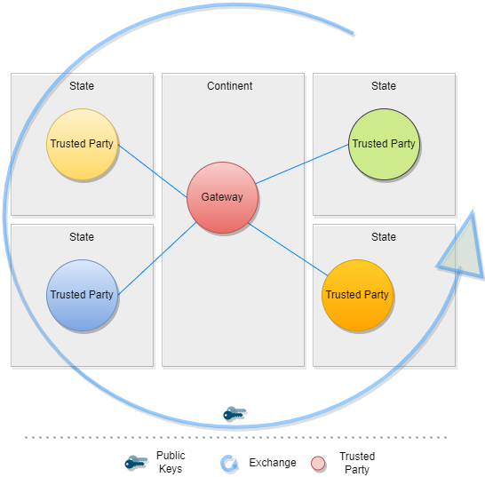

Traducción automática — no revisada por una persona
Esta página se tradujo automáticamente. Ninguna persona ha revisado ni validado esta traducción, que puede contener errores. Solo la página en el idioma original es la de referencia. Leer el original (inglés)
Machine translation — not reviewed by a person. Read the original (English)
Modelos de datos e intercambio
Actores
Los actores producen, gestionan o utilizan información sanitaria. Los actores pertinentes para la red de confianza SMART Trust son los siguientes.
Biblioteca de reglas de negocio
Servicio de confianza (Trusted Service), prestado por un nodo de una red de confianza, para compartir reglas de negocio mediante la especificación Clinical Quality Language (CQL).
Catálogo de productos
Se utiliza para gestionar y publicar los datos maestros de productos de salud, dispositivos y suministros a los que puede hacer referencia un certificado digital de salud verificable.
Servicio de terminología
Se utiliza para gestionar y publicar las correspondencias entre los distintos sistemas de códigos locales y los vocabularios obligatorios que se utilizan en los certificados digitales de salud verificables.
Publicar claves
Eventos desencadenantes
El Participante en la red de confianza, o uno de sus emisores autorizados, genera un nuevo par de claves pública-privada para la firma de documentos.
Semántica de los mensajes
Véase la documentación de la EU DCC Open API. El uso de la clave es DSC, por certificado del firmante de documentos (Document Signing Certificate)
Acciones esperadas
El ancla de confianza validará el material de claves presentado y lo distribuirá a los demás Participantes en la red de confianza
Replicar el PKD local
Eventos desencadenantes
Semántica de los mensajes
Acciones esperadas
Los pasos incluyen:
- Incorporación del PKD local (una sola vez). La incorporación puede incluir la evaluación del formato del PKD local, la concesión de acceso al PKD federado y la firma de acuerdos comerciales.
- Las claves públicas del PKD local se replican (periódicamente)
- Las claves públicas replicadas se fusionan en una lista maestra (periódicamente)
- La lista maestra se firma digitalmente para su distribución
Se espera que los PKD locales que participan en el PKD federado:
- Dispongan de una infraestructura de clave pública (PKI) existente utilizada para emitir documentos de salud de confianza (p. ej., credenciales de COVID)
- Dispongan de permisos/políticas que permitan compartir las claves públicas
- Puede compartir claves públicas en uno de los siguientes formatos:
- X.509
- JSON Web Keys (JWK)
- Identificadores descentralizados (DID) conforme a la especificación de la GDHCN.
Se espera que los PKD federados:
- Dispongan de un medio para recuperar los directorios locales de claves públicas / nodos miembros representados en los servicios de agregación
- Dispongan de permisos/políticas que permitan compartir las claves públicas de los nodos miembros de confianza
- Dispongan de una infraestructura de clave pública (PKI) existente utilizada para firmar la lista de claves de sus nodos miembros
- Puede compartir la lista de claves públicas en el siguiente formato:
- Identificadores descentralizados (DID) conforme a la especificación de la GDHCN.
Firmar la declaración del certificado de salud (HCERT)
Eventos desencadenantes
Se ha generado la carga útil de la declaración de un HCERT, que está lista para ser firmada por un emisor que actúa en nombre de un Participante en la red de confianza.
Semántica de los mensajes
El resultado debería ser un HCERT firmado válido
Acciones esperadas
Publicar claves de verificación - API
Eventos desencadenantes
Un Participante en la red de confianza publica claves en la puerta de enlace a la red de confianza (TNG) para su uso por las aplicaciones de verificación. Las claves pueden codificarse para diversos usos, entre ellos conforme a la gobernanza de certificados, según su $usage y su $domain de confianza
Semántica de los mensajes
Véase la API Swagger
Acciones esperadas
Recuperar claves de verificación - DID
Eventos desencadenantes
Semántica de los mensajes
Las claves deberían recuperarse mediante la especificación DID de la GDHCN.
Acciones esperadas
Una vez que una aplicación de verificación se ha incorporado a la red de confianza, puede recuperar claves de verificación. La lista de claves de verificación recuperada puede utilizarse para los siguientes procesos operativos:
- Incorporación a un PKD federado mediante la recuperación de la clave de firma utilizada para firmar la lista maestra (una sola vez).
- Recuperar la lista maestra del PKD federado y verificar la firma (periódicamente).
- Deserializar un código QR verificable (p. ej., el código de barras 2D de una credencial de vacunación) para determinar el identificador de la clave.
- Recuperar de la lista maestra la clave pública asociada al identificador de la clave, o utilizar una clave almacenada en caché.
- Verificar
- la firma criptográfica contenida en el código de barras 2D.
- la facultad del emisor para emitir este tipo de certificado con esta clave.
- la fecha de caducidad de las claves.
- la fecha de caducidad del certificado.
- que el certificado no figura en las listas de revocación disponibles.
- que la clave emisora sigue figurando en una lista de confianza de la autoridad emisora (no revocada).
- que la clave emisora sigue figurando en la lista de confianza de la autoridad de verificación.
- que el nombre/la identidad del certificado coincide con un documento de identidad.
- que el certificado cumple las reglas de negocio de la jurisdicción de verificación.
Recuperar claves de verificación - API
Eventos desencadenantes
Semántica de los mensajes
Véase la API Swagger
Acciones esperadas
Una vez que una aplicación de verificación se ha incorporado a la red de confianza, puede recuperar claves de verificación. La lista de claves de verificación recuperada puede utilizarse para los siguientes procesos operativos:
- Incorporación a un PKD federado mediante la recuperación de la clave de firma utilizada para firmar la lista maestra (una sola vez).
- Recuperar la lista maestra del PKD federado y verificar la firma (periódicamente).
- Deserializar un código QR verificable (p. ej., el código de barras 2D de una credencial de vacunación) para determinar el identificador de la clave.
- Recuperar de la lista maestra la clave pública asociada al identificador de la clave, o utilizar una clave almacenada en caché.
- Verificar
- la firma criptográfica contenida en el código de barras 2D.
- la facultad del emisor para emitir este tipo de certificado con esta clave.
- la fecha de caducidad de las claves.
- la fecha de caducidad del certificado.
- que el certificado no figura en las listas de revocación disponibles.
- que la clave emisora sigue figurando en una lista de confianza de la autoridad emisora (no revocada).
- que la clave emisora sigue figurando en la lista de confianza de la autoridad de verificación.
- que el nombre/la identidad del certificado coincide con un documento de identidad.
- que el certificado cumple las reglas de negocio de la jurisdicción de verificación.
Las claves deberían recuperarse mediante la especificación DID de la GDHCN.
Solicitar actualizaciones de reglas de negocio - API
Eventos desencadenantes
Semántica de los mensajes
Véase la API Swagger
Acciones esperadas
Solicitar actualizaciones de reglas de negocio - API
Eventos desencadenantes
Semántica de los mensajes
Deberá actuar como biblioteca de reglas de negocio:
- Expresa las políticas de salud (p. ej., “Necesita la pauta completa de vacunación”) como regla de negocio ejecutable mediante el Clinical Quality Language (CQL), en forma de recurso Library de FHIR
- Publica las reglas de negocio como recursos Library de FHIR en un servicio de salud de confianza
Opcionalmente:
- Proporcionar la firma digital de la regla de negocio como recurso Provenance de FHIR
- Proporciona la clave pública al PKD
Acciones esperadas
Ejecutar regla de negocio
Eventos desencadenantes
Semántica de los mensajes
Acciones esperadas
Aplicación de verificación:
- Condición previa: realizar el flujo de trabajo de verificación federada sobre uno o más códigos QR
- Identificar una (o más) regla(s) de negocio que deben ejecutarse según el caso de uso
Opcionalmente:
- Recupera del PKD la clave pública de firma de las reglas de negocio (ya sea del PKD local o a través del PKD de agregación/ federado)
- Verifica la autenticidad de la regla de negocio
- Mapear el contenido del código QR a los recursos FHIR necesarios mediante StructureMap de FHIR
- Ejecutar la regla de negocio en CQL sobre el contenido de los recursos FHIR
Solicitar conjuntos de valores - API
Eventos desencadenantes
Semántica de los mensajes
Véase la API Swagger
Acciones esperadas
Solicitar conjuntos de valores - FHIR
Eventos desencadenantes
Semántica de los mensajes
Véase IHE Sharing Value Sets and Concept Maps para las transacciones con un servicio de terminología.
Acciones esperadas
Ejecutar regla de negocio
Eventos desencadenantes
Semántica de los mensajes
Acciones esperadas
Flujos de trabajo
Sincronización rutinaria
Verificación de certificados digitales de salud
Agregación federada del PKD
Verificación federada
Validación dinámica de reglas de negocio
Ámbitos de confianza
Un Ámbito de confianza consta de:
- Casos de uso y procesos institucionales definidos relacionados con la utilización de certificados digitales de salud verificables; estos certificados digitales de salud verificables pueden emitirse o verificarse mediante servicios de confianza habilitados por los Participantes en la red de confianza digital en salud.
- las especificaciones técnicas abiertas e interoperables que identifican o definen los servicios de confianza y los certificados digitales de salud verificables aplicables; y
- un conjunto de normas de política y reglamentación que describen el comportamiento esperado de los Participantes en la Red Mundial en relación con el funcionamiento de los servicios de confianza (Trusted Services) y la utilización de certificados digitales de salud verificables (p. ej., minimización de datos, privacidad, ámbito de uso).
Los códigos de los Ámbitos de confianza de la GDHCN figuran en el conjunto de valores GDHCN Trust Domain Value Set.
Modelo de Ámbito de confianza
El Marco administrativo y operativo de la GDHCN es la fuente jurídica de los Ámbitos de confianza. El modelo lógico de Ámbito de confianza sigue su definición en tres partes: casos de uso (modelados por componentes del DAK), especificaciones técnicas y normas de política y reglamentación. Un Ámbito de confianza también nombra sus términos de uso, que son un ValueSet de las políticas con arreglo a las cuales un participante puede declarar que actúa.
Un participante nombra esas políticas en una credencial verificable con una entrada termsOfUse por política. Por ejemplo, un receptor de VHL lo hace con arreglo a la opción de credencial verificable de IHE ITI VHL.
El modelo permite que cada parte esté vacía, pero una parte vacía es un error de control de calidad (QA). También lo es un ValueSet de términos de uso que no utilice ningún proceso institucional BPMN.
| Ámbito de confianza | Definido en | Términos de uso |
|---|---|---|
| DDCC | Marco, Anexo I | Términos de uso de la DDCC |
| IPS-PILGRIMAGE | Aún no hay anexo del Marco; redactado a partir de la IG IPS Pilgrimage | IPS.HAJJ.CONSENT |
Documentación digital de certificados de COVID-19 (DDCC)
La Documentación digital de certificados de COVID-19 (DDCC), publicada en agosto de 2021, y la orientación similar para resultados de pruebas (https://www.who.int/publications/i/item/WHO-2019-nCoV-Digital_certificates_diagnostic_test_results-2022.1), publicada en marzo de 2022, sirven de referencia para la guía de implementación FHIR asociada. Esta guía de implementación (IG) es la representación computable de los elementos de datos básicos de la orientación publicada, vinculados a terminologías estándar. Estos modelos de datos, en forma de modelos lógicos FHIR, y las terminologías, en forma de conjuntos de valores FHIR, son la base de la interoperabilidad entre los distintos formatos de credenciales. La IG proporciona StructureMaps y ConceptMaps de FHIR para definir las transformaciones entre los formatos de credenciales admitidos y el conjunto de datos básico, lo que permite ejecutar reglas de negocio sobre un conjunto común de elementos de datos.
Códigos QR y modelos lógicos de la DDCC{:width=”850em”}
Actualmente se reconocen los siguientes perfiles de contenido a través de la Documentación digital de certificados de COVID-19 (DDCC) de la OMS:
- Certificados COVID digitales (DCC) de la Unión Europea (obligatorio)
- DIVOC (opcional)
- Sellos digitales visibles no restringidos (VDS-NC) de la Organización de Aviación Civil Internacional (ICAO) (opcional)
- Smart Health Cards (SHC) - Inmunización (opcional)
Especificaciones de origen
Puede resultar difícil encontrar las especificaciones de “fuente de verdad” de los formatos de certificado que se corresponden con los conjuntos de datos básicos de la DDCC. La documentación más conocida de cada uno de los formatos de certificado enumerados arriba figura en la bibliografía:
- EU DCC: [ehn-trust-framework-2021], [ehn-dcc-techspec-vol1-2021], [etsi-en-319-102-1-2016], [ec-dcc-techspec-vol1-5], [ec-dcc-vol1-2022], [eu-implementing-decision-2021-1073]
- DIVOC:
- Los elementos se definen mediante JSON-LD. A fecha de 2023-02-12, el contexto JSON-LD para vacunas más actual y el de resultados de pruebas están aquí. Tenga en cuenta que los URI de los contextos JSON-LD específicos de DIVOC incrustados en los certificados no se resuelven.
- La documentación de DIVOC está aquí, pero no incluye descripciones a nivel de elemento (p. ej., vinculaciones terminológicas para cada elemento).
- Las vinculaciones terminológicas a nivel de elemento deben deducirse de documentación más general. El contexto JSON-LD
v2introduce el elementoevidence.icd11Codepara vacunas, pero no hay documentación sobre a qué códigos está vinculado este elemento ni sobre si se utiliza en producción. No existe ninguna otra representación computable del tipo o producto de vacuna.
- ICAO: [icao-vds-nc]
- SMART Health Cards: [smart-health-cards-spec], [hl7-shc-vaccination-ig]
PH4H
La guía de implementación de la Carretera Panamericana para la Salud Digital (PH4H) describe el uso de la GDHCN en la región de las Américas.
IPS para peregrinaciones (IPS-Pilgrimage)
La guía de implementación IPS Pilgrimage incluye una representación legible por máquina de las directrices de la OMS para un IPS verificable durante las peregrinaciones. Codifica explícitamente lógica interoperable por computadora, incluidos modelos de datos, terminologías y expresiones lógicas, en un lenguaje computable para apoyar la implementación del IPS en el escenario de uso de las peregrinaciones.
Terminología
Estos conceptos y la tabla siguiente recogen las abreviaturas y la terminología utilizadas en este documento.
| Término | Descripción |
|---|---|
| DCC | Certificado COVID-19 digital (Digital COVID-19 Certificate). |
| DDCC | Documentación digital de certificados de COVID-19 (Digital Documentation COVID-19 Certificate). |
| DCC Gateway | Aplicación web REST para el intercambio de certificados de firmantes de documentos, conjuntos de valores del DCC, reglas de negocio del DCC y listas de revocación, con fines de verificación del DCC, entre los backends nacionales de los Estados conectados. |
| CMS | Cryptographic Message Syntax (sintaxis de mensajes criptográficos). Según RFC5652. Esta sintaxis se utiliza para firmar digitalmente, resumir, autenticar o cifrar contenido de mensajes arbitrario. |
| JRC | Centro Común de Investigación europeo (European Joint Research Centre). |
| OG | Puerta de enlace de origen (Origin Gateway). |
| CQL | Clinical Quality Language (lenguaje de calidad clínica). |
Introducción
Esta especificación de arquitectura proporciona los medios para establecer una red de confianza federada para su uso con registros de salud, como las especificaciones técnicas y los documentos de orientación para la implementación de la Documentación digital de certificados de COVID-19 (DDCC) de la OMS. Se basa en el supuesto de que los participantes en la red de confianza pueden establecer sus propias redes de confianza nacionales independientes, participar en una red de confianza regional o desear participar en una red de confianza federada mundial. Además, los participantes en la red de confianza pueden desear que estas redes de confianza sean interoperables para casos de uso nacionales e interjurisdiccionales. Si bien las consideraciones específicas de gobernanza y de políticas necesarias para establecer estas redes de confianza interoperables quedan fuera del ámbito de este documento, la intención es que el diseño técnico de este documento respalde las políticas intrajurisdiccionales e interjurisdiccionales de los participantes en la red de confianza.
Las especificaciones de la puerta de enlace a la red de confianza (TNG) de este documento están diseñadas para respaldar la especificación DDCC, que actúa como especificación puente/marco para diversos registros de salud, como los certificados COVID digitales (p. ej., el DCC de la UE, SMART Health Cards, DIVOC e ICAO). Esta especificación se basa en la EU Digital Covid Certificate Gateway y la amplía en varios aspectos importantes:
- permitiendo la federación y el intercambio entre pares de información entre puertas de enlace;
- facilitando el acceso a contenido de metadatos (p. ej., conjuntos de valores/codificaciones, reglas de negocio) con adhesión explícita a la especificación HL7 FHIR;
- proporcionando un medio explícito para la revocación de certificados COVID digitales; y
- permitiendo la compatibilidad (opcional) con flujos de trabajo de verificación y validación en línea.
En el sistema DCC actual, la puerta de enlace centralizada desempeña la función clave de establecer la confianza entre todos los participantes en la red de confianza conectados. Los operadores de la puerta de enlace siguen un proceso bien documentado para establecer la identidad e incorporar el ancla de confianza de cada participante en la red de confianza. La TNG se basa en este sistema para permitir que otras organizaciones creen puertas de enlace de confianza, lo que permite formar una red federada de puertas de enlace de confianza compatible con todos los principales certificados de credenciales de COVID-19.
Parte de confianza frente a backend nacional
El diseño actual de la puerta de enlace se centra en el establecimiento de la confianza entre “backends nacionales”, entendidos como sistemas operados por una autoridad sanitaria nacional o de su propiedad. Puede tratarse de un script, de una solución totalmente automatizada o de un proceso manual capaz de conectarse a la puerta de enlace de forma fiable y de realizar cargas y descargas del contenido. Qué otras soluciones concretas haya detrás queda fuera del ámbito de la propia puerta de enlace. En el ámbito de la DDCC, el término “backend nacional” resulta demasiado restrictivo, porque puede haber otras partes que se conecten con su sistema de publicación a una puerta de enlace de la red de confianza. Por lo tanto, en este ámbito el término “backend nacional” debería entenderse más bien como “parte de confianza” (Trusted Party), es decir, un participante que ha recibido acceso a una puerta de enlace de confianza. La puerta de enlace de confianza o el federador actúa entonces, a su vez, como “parte de confianza” ante otras puertas de enlace.
Visión del diseño de la puerta de enlace
Actualmente, la EU DCC Gateway es un único sistema centralizado que establece la confianza entre los participantes en el DCC y permite compartir reglas de negocio, conjuntos de valores y listas de revocación. Si otra región del mundo establece una puerta de enlace de este tipo, la arquitectura no ofrece actualmente ningún método para intercambiar estos datos de confianza entre las dos puertas de enlace. En esta nueva arquitectura, en el contexto de la DDCC, varias puertas de enlace pueden conectarse entre sí y compartir datos de confianza. A largo plazo, esta arquitectura permitirá crear grupos y, en última instancia, establecer una federación. Esta arquitectura puede ser aplicable y de interés para partes que no son autoridades, p. ej., aerolíneas que desean una copia de solo lectura del contenido de la puerta de enlace. Esto puede lograrse incorporando la aerolínea a una puerta de enlace configurada especialmente para este fin y conectada a la puerta de enlace oficial. Para alcanzar este objetivo, la arquitectura debe admitir varios modos de funcionamiento, p. ej., primario-secundario. La implementación actual de la EU DCCG es, como se ha mencionado, un único sistema centralizado que sirve de nodo central para almacenar y gestionar la información necesaria recopilada de las partes de confianza (Trusted Parties).

La TNG debería llevar a cabo esta mejora de la implementación actual de la DCCG con el propósito de crear una red entre varias puertas de enlace para intercambiar material de claves públicas asociado a registros de salud, conjuntos de valores y reglas de negocio entre distintas partes (autoridades, no autoridades, entidades comerciales). En esta arquitectura, una puerta de enlace puede conectarse a cualquier otra configurando manualmente la lista de conexiones y relaciones de confianza. Para gestionar las conexiones y su comportamiento de descarga se introduce un nuevo componente, el federador. El federador es un microservicio que actúa como cliente de descarga automatizado entre dos puertas de enlace y cumple todas las responsabilidades del intercambio de datos de confianza.

La base de este intercambio de datos es la funcionalidad de la actual biblioteca conectora, que se conecta a la puerta de enlace y proporciona al consumidor las funcionalidades más necesarias. Esta biblioteca se amplía con la funcionalidad de conectarse a varias puertas de enlace en lugar de a una sola.
Casos de uso
Incorporación bilateral
En el caso de uso de incorporación bilateral, la biblioteca conectora se conecta como parte de confianza a varias puertas de enlace para descargar/cargar contenido. Esto requiere la incorporación en ambas puertas de enlace.

Intercambio entre pares
En el caso de uso de intercambio entre pares (peer-to-peer), dos o más puertas de enlace pueden intercambiar sus datos de forma bidireccional. La puerta de enlace de origen y la de destino se permiten mutuamente descargar los datos. Todos los datos intercambiados se añadirán a los datos existentes en la puerta de enlace. Esto puede incluir los datos de puertas de enlace de terceros, si lo permite el acuerdo de intercambio de datos entre las dos puertas de enlace.

Intercambio primario-secundario
En el caso de uso de intercambio primario-secundario, una o varias puertas de enlace actúan como fuente primaria y otro conjunto de puertas de enlace actúa como fuente secundaria. En este modo, las secundarias descargarán los datos de la primaria y los añadirán a su propio conjunto de datos o reemplazarán su conjunto de datos por los datos descargados. La primaria ignora los datos de las secundarias, que actúan únicamente como copias de lectura de la puerta de enlace primaria. Los backends nacionales principales pueden conectarse a la puerta de enlace primaria y cargar los datos en esa única puerta de enlace primaria.

Intercambio de fuentes combinadas
En el caso de uso de intercambio de fuentes combinadas, la puerta de enlace descargará datos de varias puertas de enlace y los añadirá a su propio conjunto de datos. El resultado es una colección combinada.

Mediador de confianza
El contenido de la puerta de enlace puede utilizarse para establecer la confianza entre participantes que solo están débilmente acoplados, por ejemplo, dispositivos verificadores conocidos por la parte de confianza A, pero no conocidos directamente por la parte de confianza B.

Para establecer la confianza entre los participantes, puede generarse un mediador de confianza que se base en la lista de confianza de la puerta de enlace. El mediador puede entonces utilizar esta información para decidir si debería establecerse o no la relación de confianza. Por ejemplo, el interceptor puede comprobar si la firma de un JWT se creó con la clave pública de un certificado firmado por una SCA incorporada. Si la SCA está incorporada y es de confianza, queda demostrado que la firma la realizó alguien que cuenta con la confianza de esa SCA. Con ello, también se otorga la confianza a este participante.

Visión general de la arquitectura
El propósito de la puerta de enlace a la red de confianza es permitir el intercambio seguro y de confianza de datos dentro de una red de confianza.
Datos intercambiados por la TNG
Intercambio de metadatos
La TNG proporciona un medio interoperable para intercambiar metadatos de claves en apoyo de los certificados digitales de COVID-19 mediante las normas HL7 FHIR. Esto incluye, en particular:
- Conjuntos de valores que deberían compartirse mediante las transacciones definidas en el perfil IHE Sharing Value Sets and Concept Maps (SVCM) e incluir los siguientes recursos:
- Recursos ValueSet de HL7 FHIR para compartir las codificaciones y terminologías a las que hacen referencia las diversas especificaciones de certificados COVID digitales (p. ej., vacunas o pruebas permitidas). - Pueden utilizarse recursos ConceptMap de HL7 FHIR para proporcionar correspondencias entre la codificación definida por cada jurisdicción y la codificación de la especificación DDCC.
- Reglas de negocio que deberían seguir la Knowledge Artifact y la infraestructura de apoyo a la decisión clínica (Clinical Decision Support), incluidos los siguientes recursos:
- Recursos Library de HL7 FHIR para compartir bibliotecas de reglas de negocio expresadas mediante Clinical Quality Language (CQL)
- Recursos PlanDefinition de HL7 FHIR para indicar qué regla de negocio debería ejecutarse según los casos de uso pertinentes de validación o de continuidad de la atención.
Para abstraer estos requisitos, la puerta de enlace a la red de confianza introducirá una nueva funcionalidad denominada “referencias de confianza” (Trusted References), que permite a la puerta de enlace compartir cualquier tipo de endpoint de servicio sin compartir el propio contenido. Por compatibilidad con versiones anteriores, las funcionalidades de reglas de negocio y conjuntos de valores del DCC se mantienen en la arquitectura, pero pueden desactivarse mediante perfiles. Los endpoints explícitos de reglas de negocio y conjuntos de valores se sustituirán por las referencias de confianza, ya que la gran variedad de contenido médico debería dejarse en manos de las implementaciones de servidores FHIR, en lugar de implementar cada servicio en la propia puerta de enlace.
Intercambio de claves públicas
La TNG proporciona un medio para compartir las claves públicas que se utilizan para firmar los certificados COVID digitales, así como para proporcionar listas de certificados de clave pública revocados.
Intercambio de referencias
La TNG proporciona la funcionalidad de almacenar recursos seguros y de confianza (es decir, conjuntos de valores FHIR o reglas de negocio), lo que garantiza que todos los participantes en el sistema tengan un conocimiento preciso de las fuentes importantes. Estas referencias pueden almacenarse en forma de URL.
Intercambio de emisores
Para algunos tipos de credenciales, como las credenciales verificables (Verifiable Credentials), la TNG es necesaria para garantizar la confianza en los emisores de esas credenciales. La mayoría de las credenciales contienen un ID de emisor, como una URL HTTP o un DID, con el material de clave pública para verificar estas credenciales. Para ofrecer una lista de confianza de estos emisores, la puerta de enlace proporciona una funcionalidad para cargar ID de emisores.
Concepto de la solución
Para hacer realidad la visión de la arquitectura, la DCC Gateway existente se ampliará con un microservicio que implementa el componente TNG Federator. Este componente federador se despliega junto a la puerta de enlace y gestiona la comunicación con otros federadores. Cada federador puede descargar los datos de otros componentes. No está prevista la carga de datos a otros federadores (cada puerta de enlace descarga a través de un federador). Los consumidores de confianza pueden decidir utilizar la información de federación y deben activar explícitamente esta función. En resumen, el federador actúa como conector/sincronizador de la puerta de enlace y como proveedor de una interfaz para acceder a los datos federados.

Nota: La arquitectura central de la DCC Gateway no se modifica. Solo se introducirán mejoras compatibles con versiones anteriores para admitir la federación.
Establecimiento de la conexión con la puerta de enlace
La especificación DDCC proporciona normas interoperables para intercambiar contenido de metadatos, como referencias de confianza, certificados de confianza y certificados de firmantes, con sistemas a través de una puerta de enlace a la red de confianza. Estos metadatos se gestionan mediante sistemas de confianza (Trusted Systems), que necesitarán un servicio de conexión/proxy o de fachada con la puerta de enlace a la red de confianza (“TNG Mediator”). Este mediador debe ser incorporado y considerado de confianza por el operador de la TNG antes de que sea posible cargar o descargar contenido. Técnicamente puede tratarse de un script, un sistema backend o un mediador OpenHIM. Las principales tareas de este tipo de software son establecer una conexión mTLS con la puerta de enlace, firmar el contenido cargado (p. ej., CMS, Cryptographic Message Syntax) y cargar DSC firmados, entradas de revocación o publicar reglas de negocio. Los procedimientos utilizados en segundo plano quedan fuera del ámbito. Puede haber procesos de publicación manuales, decisiones automáticas u otros procesos; sin embargo, es fundamental garantizar que no se vean comprometidos el canal de confianza ni la seguridad de los certificados utilizados para la carga/conexión TLS.
Opciones para la conexión con otros sistemas
Para conectar a la TNG los sistemas existentes (es decir, PKD o cualquier otro sistema que contenga certificados PKI (p. ej., ICAO), reglas de negocio o conjuntos de valores (p. ej., servidores FHIR)) se necesita una herramienta puente que traduzca las entradas recibidas del sistema de origen a la HL7 FHIR / Rest API de la puerta de enlace. Por ejemplo, para trasladar a la puerta de enlace un directorio de claves públicas basado en LDAP, puede configurarse un script/mediador que extraiga los DSC y los cargue automáticamente en la puerta de enlace. Tenga en cuenta que, en este escenario, todas las SCA deben estar incorporadas antes de la carga para que este proceso funcione.
En circunstancias especiales, cuando sean necesarias “transacciones masivas de datos” o sincronizaciones intensivas, puede existir la opción de configurar un adaptador directamente sobre la base de datos de la puerta de enlace. La propia TNG admite JDBC, que puede aceptar bases de datos distintas de mysql. Por ejemplo, si se utiliza Cassandra, MongoDb o CouchDB y se dispone de un controlador JDBC, los datos pueden replicarse en varios nodos.
Nota: Las replicaciones de bases de datos tienen su propio comportamiento y la funcionalidad de la puerta de enlace no puede abarcar todas las bases de datos disponibles. Por lo tanto, la función JDBC solo debería utilizarse si es necesario y bajo la propia responsabilidad.
Componentes básicos
La puerta de enlace a la red de confianza está formada por la DCC Gateway, mejorada con mecanismos de devolución de llamada (callback) y fuentes adicionales de listas de confianza, un nuevo componente federador con el cliente de descarga, una API de federación, un proxy para las llamadas salientes y una interfaz con las rutas de los distintos servicios.

Modelo de confianza
Visión general
El modelo de confianza de la puerta de enlace se basa en la gobernanza de certificados PKI de la DCC Gateway. Todos los elementos relevantes para la seguridad se cargan en formato CMS firmado y están protegidos por distintos tipos de certificados PKI, según lo definido por la gobernanza de certificados PKI. Los elementos centrales del modelo de confianza son la SCA, que protege los certificados del firmante de documentos, y los mensajes CMS, que protegen el contenido cargado.
SCA y DSC
Para firmar certificados digitales de COVID-19, una autoridad emisora crea un certificado del firmante de documentos (“DSC”). Cada autoridad distribuye sus DSC a los verificadores, de modo que el DSC pueda utilizarse para demostrar la validez de un certificado emitido. Para establecer una cadena de confianza entre los DSC utilizados y los distribuidores de las listas de confianza nacionales, cada DSC está firmado por una autoridad raíz (“SCA”) para verificar la autenticidad del propio DSC. Por motivos de seguridad, la SCA se declara aislada de la red (air gapped), y su parte pública se incorpora posteriormente a la puerta de enlace. Durante la incorporación, el operador de la puerta de enlace firma la SCA para otorgar la confianza en la comprobación inicial. Tras la incorporación, cada DSC entrante puede comprobarse con respecto a la SCA de confianza. La firma del operador (firmada por DCCGTA) establece la confianza con distintos certificados, como el certificado de carga y el certificado de autenticación TLS, según lo definido por la gobernanza de certificados.

Uso de CMS
Para admitir múltiples contenidos en la puerta de enlace con el mismo nivel de seguridad, el modelo de confianza introduce CMS como contenedor genérico para los elementos relevantes para la seguridad. El formato CMS permite normalizar la firma y el cifrado independientemente del contenido, para uno o varios destinatarios.

Mejora
El modelo de confianza actual de la DCC Gateway solo admite la conexión de varios backends y el intercambio de contenido entre ellos (véase más abajo).

Para hacer realidad la visión de la arquitectura, el modelo de confianza de la puerta de enlace se ampliará para que el federador pueda admitir varias anclas de confianza. Para ello, el TNG Federator se incorporará en la puerta de enlace de origen con un certificado TNPTLS y un certificado TNPUP para acceder al contenido de la puerta de enlace. En la puerta de enlace de destino se configura el ancla de confianza de la puerta de enlace de origen (firmada por el operador) para aceptar como válido el contenido de origen. Si la verificación se realiza correctamente, el contenido se añadirá como un subconjunto al contenido existente de la puerta de enlace. Los backends nacionales conectados pueden entonces descargar toda la información activando la opción de federación, para obtener el contenido de ambas puertas de enlace. La cadena de confianza puede verificarse mediante el ancla de confianza de la puerta de enlace conectada y la lista de confianza de las anclas de confianza incorporadas.

Nota: El federador actúa como un tipo especial de “backend nacional”; por lo tanto, todos los certificados asociados a la TNP, excepto el TNPUP, se incorporarán de la forma habitual.
Claves públicas sin procesar
El modelo de confianza no admite claves públicas sin procesar por motivos de seguridad, especialmente en los casos en que:
La validez de las claves sin procesar no puede verificarse La clave sin procesar no puede ser verificada por la fuente (p. ej., la autoridad raíz) Las claves sin procesar pueden crearse y compartirse fácilmente, y una mala gobernanza “abre la puerta” a todos los participantes en la red de confianza
Por lo tanto, todas las claves sin procesar deben convertirse en un envoltorio de certificado x509 para constituir un DSC en la puerta de enlace, que debe estar firmado por una SCA debidamente incorporada. La verificación de un certificado de COVID-19 no se ve afectada por este proceso, siempre que se aplique el KID correcto durante la carga (y en el certificado).
Limitación del DSC
Para la compatibilidad con sistemas heredados, o ante cualquier necesidad de diferenciación en el proceso de verificación, por ejemplo, para identificar correctamente a los emisores o diferenciar el cálculo del KID. Se recomienda que los DSC contengan los siguientes OID en el campo de uso extendido de la clave (extended key usage):
| Campo | Valor | Descripción |
|---|---|---|
| extendedKeyUsage | 1.3.6.1.4.1.1847.2021.1.1 | Para emisores de certificados de pruebas |
| extendedKeyUsage | 1.3.6.1.4.1.1847.2021.1.2 | Para emisores de certificados de vacunación |
| extendedKeyUsage | 1.3.6.1.4.1.1847.2021.1.3 | Para emisores de certificados de recuperación |
| extendedKeyUsage | 1.3.6.1.4.1.1847.2022.1.20 | Para claves sin procesar de DIVOC |
| extendedKeyUsage | 1.3.6.1.4.1.1847.2022.1.21 | Para la clave sin procesar de SHC |
| extendedKeyUsage | 1.3.6.1.4.1.1847.2022.1.22 | Para claves sin procesar en DCC (calcular el kid solo sobre la clave pública) |
El uso del OID puede limitar el alcance de un certificado del firmante de documentos (DSC) durante el proceso de verificación (si la aplicación del verificador lo admite). Por ejemplo, los certificados de vacunación fraudulentos emitidos por centros de pruebas no serán válidos, ya que están firmados por un DSC limitado a los emisores de certificados de resultados de pruebas.
El OID también puede utilizarse como indicador de verificación, ya que puede señalar que este certificado es un envoltorio de claves sin procesar.
Pueden existir y definirse otras limitaciones del DSC a medida que surjan nuevos casos de uso.
Nota: Todos los usos extendidos de la clave (extendedKey usages) deberían estar bien documentados en GitHub para evitar confusiones sobre su uso. Cada atributo necesario debería configurarse para respaldar de la mejor manera el proceso de verificación.
Arquitectura del federador
Visión general
El federador está diseñado como un nuevo subcomponente que puede alojarse como microservicio o dentro de la puerta de enlace en un único despliegue. Este comportamiento puede configurarse durante la instalación. En conjunto, el federador ofrece la funcionalidad de descarga automatizada del contenido de la puerta de enlace o de la federación. El contenido descargado se almacena en la base de datos de la puerta de enlace para ponerlo a disposición de los endpoints de federación de la puerta de enlace. Las partes de confianza pueden entonces descargar los datos federados desde estos endpoints.
Vista de caja negra

Vista de caja blanca

Modelo de datos
####### Configuración del federador
Nota: Cada ruta de federación de la puerta de enlace debe configurarse manualmente para la descarga explícita, a fin de evitar malentendidos en la configuración. Esto es importante por motivos de seguridad. Todas las anclas de confianza deben estar incorporadas; de lo contrario, el contenido se descarta mediante filtrado.
| Campo | Tipo | Descripción |
|---|---|---|
| ID | int | ID único de la fila de la tabla |
| GatewayId | GUID | ID único de la otra puerta de enlace de origen. |
| GatewayEndpoint | Varchar | URL de la otra puerta de enlace. |
| GatewayKid | Varchar | KID del certificado de cliente de la puerta de enlace de origen que se utilizará para conectarse a la otra puerta de enlace. (TNG TLS FED |
| GatewayPublicKey | Varchar | Clave pública ECDSA de la firma de la puerta de enlace |
| AuthenticationKID | Varchar Array | Los KID del TNGTLS GW incorporado de la otra puerta de enlace. |
| TrustAnchorKIDs | Varchar Array | Los KID del ancla de confianza incorporada (TNG TA) |
| DownloadTarget | String | FEDERATION o GATEWAYONLY |
| Mode | int | Enumeración para el modo de descarga: APPEND u OVERRIDE. El modo append añade los datos descargados al conjunto de datos existente (los datos de federación existentes se reemplazarán). Override elimina los conjuntos de datos existentes (excepto el TNPTLS propio, las anclas de confianza y las configuraciones de federación) |
| Signature | Varchar | Firma del ancla de confianza |
####### Planificador de descargas
| Campo | Tipo | Descripción |
|---|---|---|
| GatewayID | GUID | ID único de la puerta de enlace |
| DownloadInterval | int | Intervalo de descarga |
| LastDownload | TimeStamp | Fecha y hora de la última descarga |
| Retry | boolean | Indicador de reintento |
| Message | String | Mensaje del federador |
| Failed Retries | int | Número de reintentos fallidos |
Endpoints
Para utilizar los datos federados, la puerta de enlace se ampliará con endpoints de federación, que son variantes modificadas de las rutas GET comunes. Al utilizar estos nuevos endpoints, el contenido común se devuelve modificado:
| Verbo | Utilizado en el federador | Utilizado en el mediador | Ruta | Modificación/comportamiento |
|---|---|---|---|---|
| GET | X | X | /trustlist/certificates | Devuelve la lista de certificados de confianza. La lista puede filtrarse con parámetros de consulta opcionales. Por motivos de compatibilidad con sistemas heredados, todos los certificados de firmantes se introducen en el grupo de certificados “DSC” (si el perfil está habilitado). Todos los demás certificados deberían entregarse mediante parámetro de consulta. |
| GET | X | X | /trustlist/issuers | Devuelve la lista de emisores de confianza. La lista puede filtrarse con parámetros de consulta opcionales. |
| GET | X | X | /trustlist/signatures | Devuelve la lista de firmas de las listas de confianza existentes. |
| GET | X | X | /trustlist/references | Devuelve la lista de referencias de confianza. La lista puede filtrarse con parámetros de consulta opcionales. |
Nota: Todas las rutas deberían filtrar el contenido entregado por hash para evitar la entrega de contenido duplicado. En determinadas circunstancias, dos federaciones distintas pueden recibir el mismo contenido de una única TP.
Parámetros de consulta comunes
Cada ruta que entregue datos federados debe proporcionar un parámetro de consulta para filtrar las federaciones mediante una matriz:
/URL?federationId=id1,id2,id3&Domain=DCC&ResourceType=...
Si el modo se establece en “GATEWAYONLY”, debe utilizarse para consultar únicamente el id de la puerta de enlace configurada.
Formato de federación
El formato de los datos federados debería contener siempre un envoltorio de federación con la información de federationID, Domain y tipo de recurso.
Proceso de descarga
Para federar los datos de varias puertas de enlace se introduce un proceso de descarga que debería garantizar que solo se descarguen datos de confianza en una puerta de enlace local. En este contexto, datos de confianza significa que el operador de una puerta de enlace local tiene el control total sobre qué datos federados se aceptan y cuáles no. Para lograr este objetivo, el operador de la puerta de enlace local debe incorporar explícitamente cualquier federador remoto, además de las anclas de confianza de los datos que pueden aceptarse. Esto es necesario porque cada federador remoto puede entregar los datos de varias otras puertas de enlace (en las que confía el operador de la puerta de enlace de origen), pero ello no significa necesariamente que el operador de la puerta de enlace local también confíe automáticamente en esos datos (deben evitarse las relaciones de confianza implícitas). Por lo tanto, durante el proceso de descarga debería ejecutarse una comprobación que omita todos los datos en los que el operador local no confíe explícitamente. Esto puede lograrse mediante la inclusión en una lista blanca de varias anclas de confianza y la verificación cruzada con los certificados TNPUP. Si la cadena de confianza se establece de este modo, cada contenido puede descargarse, verificarse e incorporarse al almacén. El propio proceso de descarga sigue un mecanismo de descarga delta, que descarga diariamente todo el contenido y, a lo largo del día, solo los deltas. Para la red de confianza, esto significa que un certificado “se propaga” paso a paso desde la puerta de enlace de origen a todas las demás puertas de enlace. Debido a este comportamiento, debe tenerse en cuenta que transcurre aproximadamente un día entre la creación de un par de claves pública-privada y la emisión de los primeros certificados con él.

Modificaciones y cambios de la arquitectura
Modificaciones de la EU DCC Gateway (especificación)
Tablas de datos
La tabla de partes de confianza (véase el capítulo 4.2.3.1, EU DCC Gateway) se amplía con un nuevo tipo de certificado, “TRUSTANCHOR”; en la llamada a la API de listas de confianza aparecen estos nuevos tipos. Para distinguir entre un federador y una parte de confianza normal, se introduce un tipo (“TP”, “FEDERATOR”,”GATEWAY”) para el elemento de confianza. Para distinguir entre distintos dominios de certificados, la tabla también obtiene una nueva columna ‘‘DOMAIN”, cuyo contenido predeterminado es “DCC’’. Otros contenidos posibles en este momento son “ICAO”, “DIVOC” y “SHC”. El dominio aparece en las rutas de las listas de confianza.
Cada tabla de datos (SignerInformation, Trusted Issuer, Trusted Reference, etc.) obtiene una nueva columna para el UUID, el ID de federación y objectVersion. Las claves primarias se cambian a ID + id de federación para garantizar la unicidad.
Carga de SignerInformation
Los endpoints de información del firmante deben poder configurarse mediante un perfil para activar y desactivar las rutas. Esto es necesario para mantener la compatibilidad con versiones anteriores de la EU DCC Gateway. En el contexto de la DDCC, estas rutas están desactivadas.
Carga de certificados de confianza
Para admitir casos de uso adicionales, la puerta de enlace se modificará con endpoints que permitan cargar certificados firmados por la SCA de un participante en la red de confianza. El endpoint de carga funciona de forma similar al endpoint de carga de información del firmante, con la diferencia de que la carga contiene más información adicional sobre el certificado. La plantilla concreta de esta información adicional debe definirse mediante un esquema. La carga de certificados debe permitir elegir un kid, porque otras normas definen kids estáticos o los eligen de otras formas distintas a las del DCC. Si no se proporciona ningún kid, se aplica el cálculo estándar del DCC de los primeros 8 bytes del hash SHA256.
Comprobación de estado
Para supervisar el estado de la puerta de enlace se introduce una comprobación de estado. La nueva ruta devuelve 200 si la puerta de enlace está en funcionamiento. Cuando la puerta de enlace está en mantenimiento, las rutas deben devolver 204. Todos los demás códigos de retorno indican un error.
Perfiles de rutas
Las rutas POST, PUT y DELETE se modificarán mediante perfiles para que sean configurables. Esto permite desactivar la carga de datos, lo cual resulta especialmente útil para los casos de uso primario-secundario/fuentes combinadas. En esta configuración no es necesario incorporar certificados TNPUP.
Endpoints de conjuntos de valores y reglas de negocio
Los endpoints de ValueSet y de reglas de negocio deben poder habilitarse/deshabilitarse mediante la configuración de perfiles.
Las reglas de negocio obtienen un nuevo endpoint que devuelve objetos individuales mediante el id de la regla de negocio (/rules/{TrustNetworkPartcipant}/{ruleId}}.
Nota: Esta nueva ruta se introduce para crear una vía de migración hacia las referencias de confianza. En el modo estándar del EU DCC no hay ningún impacto en la compatibilidad con versiones anteriores.
Referencias de confianza
Las referencias de confianza son URL que cargan los participantes en la red de confianza para dar a conocer sus endpoints de servicio sobre conjuntos de valores, reglas de negocio y otros contenidos con fines de interoperabilidad. Dentro de las referencias de confianza solo se permiten métodos GET públicos. La autorización debe correr a cargo de los mediadores de confianza, si es necesario.
| Campo | Opcional | Tipo | Descripción | ||
|---|---|---|---|---|---|
| UUID | No | String | UUID del objeto. | ||
| URL | No | String | Puede ser HTTP(s) | ||
| Tipo | No | String | FHIR | DCC… | |
| Version | No | String | Cualquier cadena de versión. | ||
| Country | No | String | Participante en la red de confianza al que se refiere la URL. | ||
| Service | No | String | p. ej., ValueSet, PlanDefinition, etc. | ||
| Thumbprint | No | String | Hash SHA256 del contenido subyacente | ||
| Name | No | String | Nombre del servicio | ||
| SSLPublicKey | No | String | Certificado SSL del endpoint (si procede). | ||
| Content-Type | No | String | Tipo MIME del contenido | ||
| SignatureType | No | String | NONE | JWS | CMS |
Emisor de confianza
Actualmente es posible incorporar SCA como referencia de confianza del emisor (Issuer Trust Reference) para los DSC, lo que dificulta su uso fuera del mundo PKI. Otros tipos de credenciales, como las credenciales verificables (Verifiable Credentials), utilizan DID u otros ID de emisor que no están necesariamente vinculados a ninguna SCA, pero que tienen material criptográfico detrás, p. ej., fuentes de JWK, etc. Para admitir a estos emisores y sus credenciales, la puerta de enlace se ampliará con una interfaz de emisores de confianza que permitirá recibir este tipo de ID de confianza. Todos estos emisores de confianza deben incorporarse como SCA y todos los demás certificados.
Una entrada de emisor de confianza que puede incorporarse se define como:
| Campo | Opcional | Tipo | Descripción |
|---|---|---|---|
| URL | No | String | Puede ser una URL HTTP(s) o DID. |
| Tipo | No | String | HTTP o DID |
| Country | No | String | Participante en la red de confianza al que se refiere la URL. |
| Thumbprint | Sí | String | Hash SHA256 del contenido subyacente (si procede) |
| Name | No | String | Nombre del servicio |
| SSLPublicKey | Sí | String | Certificado SSL del endpoint (si procede). |
| KeyStorageType | Sí | String | Tipo de almacenamiento de claves. P. ej., JWKS, DIDDocument, JKS, etc. |
La entrada se incorporará en la puerta de enlace y será firmada por el ancla de confianza.
Nota: Cuando la URL de esta tabla no se resuelve, todos los campos opcionales pueden quedar vacíos. Esto ofrece menos confianza y debería evitarse en las operaciones.
Despliegue
####### Restricciones La TNG puede operarse detrás de un componente de red (equilibrador de carga, API Gateway , proxy inverso, etc.) que se encargue de la autenticación mediante certificado de cliente y de la extracción de los atributos del certificado de cliente de la conexión TLS. Tras la terminación TLS (TLS Offloading), depende de la infraestructura si debe establecerse o no una red TLS interna protegida. Por ejemplo, cuando la TNG se despliega en una malla de servicios distribuida, se recomienda utilizar canales protegidos por TLS, p. ej., mallas de servicios basadas en SPIFFE/SPIRE. El modo que mejor se adapte al despliegue depende de la infraestructura del operador. La propia puerta de enlace también puede operarse en modo de paso directo SSL (SSL Passthrough).
Todos los demás componentes, como los proxies, deben estar alineados en su configuración para evitar el HTTP Smuggling o vulnerabilidades similares.
####### Configuración de Kubernetes

Modificaciones de la puerta de enlace a la red de confianza de la OMS
En la última versión de la arquitectura de la TNG1, se introdujeron los cambios relativos a los emisores de confianza y los certificados de confianza para permitir distintos tipos de tecnologías en la verificación de la confianza. Puede tratarse de X509 o de DID conforme a la especificación DID Core [w3c-did-core]. Durante las últimas iteraciones de especificación y alineación, surgieron algunos puntos clave que la puerta de enlace debe admitir adicionalmente:
- Compatibilidad nativa con DID para las listas de confianza de la puerta de enlace (formato de documento DID) (opcional)
- Intercambio descentralizado de documentos DID para ponerlos a disposición de los verificadores
- Proceso de integración alineado con la OMS para los participantes cualificados en la red de confianza
En esta sección se describen estos cambios.
Cambios técnicos
Para admitir la función de documentos DID conforme a la especificación de confianza, la puerta de enlace se ampliará con un generador de documentos DID y con la capacidad de firmar estos documentos DID. Esto incluye un medio para generar claves de firma mediante un almacén seguro (vault) y registrar la clave pública de la firma en un registro descentralizado de claves.

Arquitectura y despliegue en Azure
La nube pública Microsoft Azure es el entorno de operación previsto para la puerta de enlace a la red de confianza (TNG) alojada por la OMS. La TNG se operará en Azure Kubernetes Service (AKS) y utilizará Azure CDN para la distribución de claves públicas mediante documentos DID.

Concepto del proceso de integración
La Secretaría de la Red Mundial de Certificación Digital de Salud de la OMS se encarga de gestionar la solicitud de incorporación de los participantes cualificados en la red de confianza para que se conecten como parte de confianza a la red de confianza.
Especificaciones DID
La especificación de la lista de confianza común define el formato de mínimo común denominador que puede interoperar entre todas las especificaciones incluidas y admitir las funciones mínimas requeridas de cada especificación. Esto incluye tener en cuenta los requisitos mínimos de seguridad que dan cumplimiento a cada una de las especificaciones. Se diseñó teniendo en cuenta los siguientes principios:
- DEBERÁ poder convertirse a partir de los formatos de cada red de confianza existente
- DEBERÁ describir una ruta de la clave al ancla de confianza para todas las especificaciones
- DEBERÁ poder almacenarse en caché
- DEBERÁ poder fusionarse (los operadores de listas de confianza pueden integrar las entradas de otros)
- DEBERÁ ser utilizable por todas las partes interesadas que necesiten verificar credenciales de salud en sus operaciones
Documento DID v2.0
En la especificación de publicación versión 2.0 de DID de la GDHCN de la OMS, se crean varios archivos DID según las necesidades de claves que usted tenga.
Documento DID v1.0 (obsoleto)
En la versión 1.0 de la especificación DID de la GDHCN de la OMS de publicación, un único archivo DID contiene todas las claves.
Listas de confianza de la GDHCN
Esta especificación describe la publicación del material de claves de la Red Mundial de Certificación Digital de Salud (GDHCN) como documentos de identificadores descentralizados (DID). Los DID se especifican en la especificación W3C DID Core. El concepto DID resume los principales motivos y el uso del formato DID en el ámbito de la GDHCN.
Una clave para lograr una interoperabilidad real entre las redes de confianza existentes es alcanzar una alineación en los formatos de las listas de confianza.
| Versión | Estado | Descripción |
|---|---|---|
| 2.0.0 | Borrador | La versión 2.0.0 está en fase de prepublicación para su verificación y para recabar comentarios. A nivel técnico, en la API se usa “v2” para referirse a los documentos DID que siguen la especificación de la versión dos |
| 1.0.0 | Released | La versión 1.0.0 está obsoleta y será sustituida por la versión 2.0.0 |
Listas de confianza 2.0.0
La versión 2.0.0 introduce dos variantes de las listas de confianza: integrada y por referencia.

Para cada uno de los entornos de desarrollo (DEV), pruebas de aceptación de usuario (UAT) y producción (PROD) existe una lista de confianza, según la tabla siguiente:
| Entorno | Variante | URL |
|---|---|---|
| DEV | Integrada | https://tng-cdn-dev.who.int/v2/trustlist/did.json |
| DEV | Referencia | https://tng-cdn-dev.who.int/v2/trustlist-ref/did.json |
| UAT | Integrada | https://tng-cdn-uat.who.int/v2/trustlist/did.json |
| UAT | Referencia | https://tng-cdn-uat.who.int/v2/trustlist-ref/did.json |
| PROD | Integrada | https://tng-cdn.who.int/v2/trustlist/did.json |
| PROD | Referencia | https://tng-cdn.who.int/v2/trustlist-ref/did.json |
El tipo integrado de lista de confianza lleva el material de claves directamente en la propiedad verificationMethod de los documentos DID y permite la verificación inmediata. En el nivel raíz contiene todas las claves importadas desde la puerta de enlace a la red de confianza (TNG).
Las listas de tipo referencia enlazan otros documentos DID, que pueden contener el material de claves propiamente dicho. Por lo tanto, las listas de confianza de tipo referencia solo contienen identificadores DID que pueden usarse para resolver documentos DID. Esto ayuda a mantener concisos los documentos principales de las listas de confianza y permite el descubrimiento dinámico de las estructuras DID y del material de claves.
Estructura de las listas de confianza DID
La versión 2.0.0 introduce una estructura jerárquica para los documentos DID, a fin de permitir una resolución y un descubrimiento más detallados del material de claves. Estos documentos DID se parametrizan según los niveles de la tabla siguiente.
| Nivel | Descripción |
|---|---|
| raíz | Un parámetro fijo para todo el material de claves de confianza o todas las referencias DID de confianza de la GDHCN. |
$domain |
Contiene material de claves de confianza o referencias DID de la GDHCN para un ámbito de confianza admitido. $domain debería ser uno de los códigos del conjunto de valores de Ámbitos de confianza de la GDHCN. |
$participant |
Contiene material de claves de confianza o referencias DID de la GDHCN para un participante de confianza. $participant debería ser uno de los códigos del conjunto de valores de Participantes de la GDHCN. |
$usage |
Contiene material de claves de confianza o referencias DID de un tipo de uso de clave admitido. El tipo $usage es uno de los códigos de uso de clave del conjunto de valores de Usos de clave de la GDHCN. |
Los niveles se organizan jerárquicamente de modo que funcionan como filtros que siguen una operación lógica AND al resolver o descubrir material de claves. Tenga en cuenta que el carácter “-“ puede usarse como comodín en cada subnivel de la raíz. Esto permite omitir el filtrado en el nivel correspondiente, con lo que se seleccionan efectivamente todos los contenidos de ese nivel.
Los siguientes ejemplos describen el comportamiento esperado de la lista de confianza integrada:
- tng-cdn.who.int/v2/trustlist/did.json selecciona todas las claves de todos los
$domains,$participants y tipos de$usagede clave. - tng-cdn.who.int/v2/trustlist/
$domain/$participant/did.json selecciona todos los tipos de$usagede clave para un$domainY un$participantconcretos. - tng-cdn.who.int/v2/trustlist/-/
$participant/did.json selecciona todos los tipos de$usagede clave en todos los$domains para un$participantconcreto. - tng-cdn.who.int/v2/trustlist/
$domain/$participant/$usage/did.json selecciona todas las claves de un tipo de$usagede clave concreto para un$domainY un$participantdados. - tng-cdn.who.int/v2/trustlist/-/
$participant/did.json selecciona el material de claves o las referencias de todos los$domains para un$participantconcreto, sin filtrar por los tipos de uso de clave. - tng-cdn.who.int/v2/trustlist/-/
$participant/$usage/did.json selecciona las claves o referencias de todos los$domains para un$participantconcreto y un tipo de$usagede clave concreto. - tng-cdn.who.int/v2/trustlist/
$domain/-/$usage/did.json selecciona las claves de todos los$participants de un$domainconcreto, filtradas por su tipo de$usagede clave. - tng-cdn-who.int/v2/trustlist/-/- selecciona el material de claves de todos los
$domains y todos los$participants sin filtrar por un tipo de$usageconcreto, por lo que el did.json puede contener claves SCA y DSC.
Y los siguientes ejemplos describen el comportamiento esperado de la lista de confianza de tipo referencia:
- tng-cdn.who.int/v2/trustlist-ref/did.json contiene todas las referencias a documentos DID del subnivel siguiente, como id DID.
- tng-cdn.who.int/v2/trustlist-ref/
$domain/did.json contiene todas las referencias a documentos DID del nivel de$participant, como id DID, para el$domainindicado. - tng-cdn.who.int/v2/trustlist-ref/
$domain/$participant/did.json contiene todas las referencias a documentos DID del nivel de tipo de$usagede clave, como id DID, para el$domainy el$participantseleccionados. - tng-cdn.who.int/v2/trustlist-ref/
$domain/$participant/$usage/did.json contiene una referencia a un DID de la lista de confianza integrada que corresponde al$domain,$participanty tipo de$usagede clave seleccionados, y que contiene el material de claves.
Nota: todos los niveles de la lista de confianza de tipo referencia pueden contener referencias DID adicionales que enlazan con documentos DID externos de confianza.
El diagrama de la estructura de las listas de confianza DID representa las relaciones de referencia y de contención entre los tipos de lista de confianza para los niveles definidos.


Ejemplos de documentos DID
Documento DID de tipo referencia que enlaza la lista de confianza integrada para $domain: DCC, $participant: XXA y tipo de $usage de clave: DSC.
{
"@context": [
"https://www.w3.org/ns/did/v1",
"https://w3id.org/security/suites/jws-2020/v1"
],
"id": "did:web:worldhealthorganization.github.io:tng-cdn-dev:v2:trustlist-ref:DCC:XXA:DSC",
"controller": "did:web:worldhealthorganization.github.io:tng-cdn-dev:v2:trustlist-ref:DCC:XXA",
"verificationMethod": [
"did:web:worldhealthorganization.github.io:tng-cdn-dev:v2:trustlist:DCC:XXA:DSC"
],
"proof": {
"type": "JsonWebSignature2020",
"created": "2024-11-10T12:00:35Z",
"nonce": "SC56sBBcqqTXh0EPdFlaOWDXxSpwupVa",
"proofPurpose": "assertionMethod",
"verificationMethod": "did:web:raw.githubusercontent.com:WorldHealthOrganization:tng-participants-dev:main:WHO:signing:DID",
"jws": "eyJiNjQiOmZhbHNlLCJjcml0IjpbImI2NCJdLCJhbGciOiJFUzI1NiJ9..MEQCICxoXFEI-o0SupgO0U5BhKjRI1AZaAtAtw_byQMgLm6CAiBTtyJYF7ZMgWTlmivMv5A4In3K6LBEF0AXiCYM2VSSIg"
}
}
Lista de confianza integrada para $domain: DCC, $participant: XXA y tipo de $usage de clave: DSC con el material de claves:
{
"@context": [
"https://www.w3.org/ns/did/v1",
"https://w3id.org/security/suites/jws-2020/v1"
],
"id": "did:web:worldhealthorganization.github.io:tng-cdn-dev:v2:trustlist:DCC:XXA:DSC",
"controller": "did:web:worldhealthorganization.github.io:tng-cdn-dev:v2:trustlist:DCC:XXA",
"verificationMethod": [
{
"id": "did:web:worldhealthorganization.github.io:tng-cdn-dev:v2:trustlist:DCC:XXA:DSC#XPjhL9Znd1M=",
"type": "JsonWebKey2020",
"controller": "did:web:worldhealthorganization.github.io:tng-cdn-dev:v2:trustlist:DCC:XXA",
"publicKeyJwk": {
"kty": "EC",
"kid": "XPjhL9Znd1M=",
"x5c": [
"MIICuTCCAmCgAwIBAgIUD9k1Q64Eav5r07DQ4Gff/7h7r6QwCgYIKoZIzj0EAwIwdDELMAkGA1UEBhMCWEExFDASBgNVBAgMC1hYQSBDb3VudHJ5MRgwFgYDVQQHDA9YQSBDYXBpdG9sIENpdHkxDDAKBgNVBAoMA1dITzEMMAoGA1UECwwDUiZEMRkwFwYDVQQDDBBOYXRpb25YQV9UTlBfU0NBMB4XDTI0MDgwMjEzNDM0M1oXDTI2MDgwMjEzNDM0M1owfzELMAkGA1UEBhMCWEExFDASBgNVBAgMC1hYQSBDb3VudHJ5MRgwFgYDVQQHDA9YQSBDYXBpdG9sIENpdHkxDDAKBgNVBAoMA1dITzEMMAoGA1UECwwDUiZEMSQwIgYDVQQDDBtIZWFsdGggQWRtaW5pc3RyYXRpb24gb2YgWEEwWTATBgcqhkjOPQIBBggqhkjOPQMBBwNCAAT3TVbWYsSYYarCUv8sfvmv2y0GjDEI+PAkm/92na/zAOoV8O2w7rov/Txk3wwz/jMoKvx+IgSfYoyygtGetYEdo4HEMIHBMA4GA1UdDwEB/wQEAwIHgDAdBgNVHQ4EFgQUhjRj4qGi0+rt7ka7GLiol6q2+78wHwYDVR0jBBgwFoAUoir+zkKsSL7OkG8dPyThX49GLtEwPQYDVR0fBDYwNDAyoDCgLoYsaHR0cDovL2NybC5leGFtcGxlZG9tYWluLmV4YW1wbGUvQ1JML1NDQS5jcmwwMAYDVR0lBCkwJwYLKwYBBAGON49lAQEGCysGAQQBjjePZQECBgsrBgEEAY43j2UBAzAKBggqhkjOPQQDAgNHADBEAiATU7uopFD4U3mLHHQn+0ncg4gb5ZazhhrXMXwzAD4NbgIgd3jcskFPyOoBGut8oyXu+nKYKr5zFCqmXkYlILqCo6Q=",
"MIICMDCCAdWgAwIBAgIUFqWc0xbrcpAettDF8gEymTzDtSkwCgYIKoZIzj0EAwIwdDELMAkGA1UEBhMCWEExFDASBgNVBAgMC1hYQSBDb3VudHJ5MRgwFgYDVQQHDA9YQSBDYXBpdG9sIENpdHkxDDAKBgNVBAoMA1dITzEMMAoGA1UECwwDUiZEMRkwFwYDVQQDDBBOYXRpb25YQV9UTlBfU0NBMB4XDTI0MDgwMjA3MTY0MVoXDTI4MDgwMjA3MTY0MVowdDELMAkGA1UEBhMCWEExFDASBgNVBAgMC1hYQSBDb3VudHJ5MRgwFgYDVQQHDA9YQSBDYXBpdG9sIENpdHkxDDAKBgNVBAoMA1dITzEMMAoGA1UECwwDUiZEMRkwFwYDVQQDDBBOYXRpb25YQV9UTlBfU0NBMFkwEwYHKoZIzj0CAQYIKoZIzj0DAQcDQgAEeKTWEuRQ4ftDRaTBA6++wea8ODmEqCLE/nWTcvcX069g3YlWEokVgEIMEumXcez++bcIayhRYDi4itAqd5DmJ6NFMEMwEgYDVR0TAQH/BAgwBgEB/wIBADAOBgNVHQ8BAf8EBAMCAQYwHQYDVR0OBBYEFKIq/s5CrEi+zpBvHT8k4V+PRi7RMAoGCCqGSM49BAMCA0kAMEYCIQC2+Bl6No20L/uSxr4bJSPDAAJ37UhhH52ppOElxB1dqgIhANbn1ZF0DNWYyH+eKBTrY+14zbzhDxlXWh/Go1OM9ZZ/"
],
"crv": "P-256",
"x": "APdNVtZixJhhqsJS_yx--a_bLQaMMQj48CSb_3adr_MA",
"y": "AOoV8O2w7rov_Txk3wwz_jMoKvx-IgSfYoyygtGetYEd"
}
}
],
"proof": {
"type": "JsonWebSignature2020",
"created": "2024-11-10T12:00:21Z",
"nonce": "Gp3uOuUTNgAFxm31fIjNy7yYt34aOP0g",
"proofPurpose": "assertionMethod",
"verificationMethod": "did:web:raw.githubusercontent.com:WorldHealthOrganization:tng-participants-dev:main:WHO:signing:DID",
"jws": "eyJiNjQiOmZhbHNlLCJjcml0IjpbImI2NCJdLCJhbGciOiJFUzI1NiJ9..MEYCIQD8AbUnGxHgmkqNQTzl6E0ZJocZ0N-vrziFB9-jgRSXbgIhAJUB0Wq5YUJPcywS15JMdoiVJDV_ubWuEZwRnuM5A8QB"
}
}
Nota: las claves específicas usan como identificador el identificador de clave (kid) codificado en base64. Se representa como fragmento (#) en el id del método de verificación y puede resolverse mediante filtrado en el lado del cliente.
Verificación de un documento de lista de confianza
Todo documento DID de lista de confianza, ya sea integrado o de referencia, lleva un proof. La prueba es una prueba de datos vinculados JSON Web Signature 2020 realizada con la clave de firma de la OMS para el entorno. Un verificador DEBE comprobar esta prueba antes de confiar en cualquier clave o referencia que figure en el documento, y DEBE rechazar un documento cuya prueba no se verifique. Obtener un documento por HTTPS desde el host que indica su DID no sustituye a esta comprobación, porque el documento puede servirlo una caché o un espejo.
Nota: los documentos de ejemplo anteriores son anteriores al formato actual. Los documentos que se publican hoy llevan además el tng-context del entorno en @context (por ejemplo, https://smart.who.int/trust/tng-context/v1-DEV.jsonld), y cada método de verificación tiene también los miembros domain, participant y keyusage, cada uno de ellos un objeto con un único code.
El firmante. proof.verificationMethod indica el DID del firmante. Un verificador DEBE compararlo con el DID del firmante en el que confía para el entorno, configurado de antemano. Una prueba que se verifica con otro DID no demuestra nada.
| Entorno | DID del firmante |
|---|---|
| DEV | did:web:raw.githubusercontent.com:WorldHealthOrganization:tng-participants-dev:main:WHO:signing:DID |
| UAT | por confirmar |
| PROD | por confirmar |
El documento DID del firmante tiene un único método de verificación. Su id es el DID del firmante, su tipo es JsonWebKey2020 y su publicKeyJwk es una clave EC P-256, por lo que alg es ES256 si está presente.
Los contextos JSON-LD. La prueba firma la forma RDF del documento, por lo que la firma depende del contenido exacto de cada contexto JSON-LD. Un verificador DEBE procesar los documentos con las copias siguientes, almacenadas localmente. NO DEBE desreferenciar las URL de los contextos en el momento de la verificación: si una copia publicada cambiara, el mismo JSON produciría bytes firmados diferentes.
| URL del contexto | Contenido utilizado por el firmante |
|---|---|
https://www.w3.org/ns/did/v1 |
Contexto W3C DID v1, sha256 4f3eae5568c9c5f036a082088f9e192019ee06faa78973c87ff91d5421b88dad |
https://w3id.org/security/suites/jws-2020/v1 |
Contexto de la suite JWS 2020, sha256 d648e05ddc6577827ca2bfd5e931f53e9ebc6e52a57a8da81df4ec8c46ffcd1e |
https://smart.who.int/trust/tng-context/v1-DEV.jsonld, v1-UAT.jsonld, v1.jsonld |
tng-context/v1-DEV.jsonld, v1-UAT.jsonld, v1.jsonld, tal como los publica esta guía |
https://w3id.org/security/v3 (solo opciones de la prueba) |
contexto security v3 tal como se incluye en ld-signatures-java 1.11.0 (security-v3-unstable.jsonld), sha256 311be32772d8e42f96c1a6ae899e3fa15efb06c27cfd207d86e8abb9951a3e74 |
El tng-context asigna domain, participant y keyusage a IRI de ValueSet y code a @id. Como resultado, los códigos pasan a ser IRI en la forma firmada, y una misma clave se canonicaliza de forma diferente en cada entorno.
La JWK. En el contexto JsonWebKey2020, publicKeyJwk es un literal JSON (@json). Entra en la forma firmada como su JSON canónico según RFC 8785. Los miembros de una JWK de lista de confianza son cadenas o matrices de cadenas: kty, kid, crv, x, y, n, e y x5c. Por ello, en la forma canónica no se plantea ningún formateo de números. Un verificador PUEDE rechazar una JWK que tenga cualquier otro tipo de valor de miembro.
El algoritmo.
- Elimine
proofdel documento. Canonicalice el resto con RDF Dataset Canonicalization (URDNA2015), usando los contextos anteriores, y serialice el resultado como N-Quads canónicos. - Tome
proofsinjwscomo opciones de la prueba, con@contextestablecido enhttps://w3id.org/security/v3. Canonicalice y serialice las opciones de la misma manera. - La entrada de firma son los 64 bytes
SHA-256(proof options N-Quads) || SHA-256(document N-Quads). proof.jwses una JWS separada (RFC 7515, apéndice F) con carga útil no codificada (RFC 7797). Su encabezado protegido es exactamente{"b64":false,"crit":["b64"],"alg":"ES256"}. Verifique la firma ES256 sobreASCII(BASE64URL(header)) || '.' || signing inputcon la clave del firmante.- Actualmente, la firma es una
SEQUENCE { r, s }ECDSA codificada en DER (70–72 bytes). RFC 7518 §3.4 exige lar || sde 64 bytes, y la corrección del firmante se sigue en tng-key-distribution#85. Hasta que se corrija el firmante, los verificadores DEBERÍAN aceptar cualquiera de las dos formas y DEBERÍAN analizar el DER de forma estricta.
Los N-Quads canónicos ordenan las líneas por punto de código Unicode. El orden de cadenas de Java (unidades de código UTF-16) solo difiere para los caracteres por encima de U+FFFF, y ningún documento de lista de confianza contiene ninguno. Un verificador PUEDE rechazar un documento con dichos caracteres en lugar de adivinar el orden.
En litlfred/smart-trust-tools (requisito STT-TRU-006) se mantiene un ejemplo resuelto, con sus N-Quads canónicos, la entrada de firma y dos implementaciones de verificador independientes.
Entornos y repositorios
Las listas de confianza se mantienen en GitHub y se publican mediante GitHub Pages.
| Entorno | Enlace al repositorio | Enlace a Pages |
|---|---|---|
| Desarrollo | https://github.com/WorldHealthOrganization/tng-cdn-dev | https://worldhealthorganization.github.io/tng-cdn-dev |
| UAT | https://github.com/WorldHealthOrganization/tng-cdn-uat | https://tng-cdn-uat.who.int |
| Producción | por determinar. | https://tng-cdn.who.int |
Especificación de listas de confianza 1.0.0
La especificación inicial está obsoleta.
Documento DID v1.0 (obsoleto)
El formato unificado se basa en la especificación Decentralized Identifiers (DIDs) v1.0. Los DID son identificadores únicos a nivel mundial con forma de URI. El esquema de URI incluye un nombre de método que corresponde a un método estándar mediante el cual puede resolverse un documento DID. Este documento DID es un JSON-LD estructurado que recoge, en un formato común, cada clave pública existente (independientemente de que se utilice el formato X.509 o JWK) de los miembros de una red de confianza. Permite añadir metadatos adicionales (como la finalidad prevista y los identificadores de clave) a las claves existentes sin modificar las propias claves subyacentes. Proporciona un medio para publicar y firmar criptográficamente listas maestras de las claves reconocidas que utiliza una red de confianza.
El método DID de formato unificado seleccionado es did:web, un método para recuperar documentos DID a través de la infraestructura web (https) existente. Los identificadores did:web tienen la forma <DOMAIN NAME>:<PATH COMPONENT 1>:...: <PATH COMPONENT N>. La resolución se realiza mediante un GET https sobre la URL que se forma a partir de este identificador mediante https://DOMAIN NAME/PATH COMPONENT 1/.../PATH COMPONENT N/did.json. Por ejemplo, did:web:example.com:my:path resolvería un documento DID a partir de la URL https://example.com/my/path/did.json. En el futuro podrán admitirse métodos DID adicionales.
El propio documento DID debería contener:
- un campo ‘id’, que es el propio DID y representa al sujeto del DID (DID Subject), en este caso la lista de confianza
- una lista de claves públicas dentro del campo ‘verificationMethod’
- una firma opcional mediante un campo ‘proof’
La matriz verificationMethod representa las claves de firma individuales asociadas a los emisores dentro de la entidad representada por el sujeto del DID, e incluye:
- un campo
id, que es una URL de DID compuesta por el DID de este documento DID y el ID de la clave, con la forma DID#key - el controlador de la clave pública, que puede ser el documento actual (en caso de que un miembro de la red de confianza publique una clave) o la fuente de la clave pública en el caso de un agregador
- la clave pública JWK, incluidos el x509 de la clave y la cadena de confianza hasta la autoridad de certificación raíz
El propio documento DID puede firmarse añadiendo un bloque ‘proof’ que contenga los detalles de la firma y la clave utilizada para la verificación.
Para obtener más información sobre el formato del documento DID para una especificación de lista de confianza, consulte la documentación de la especificación de la lista de confianza DDCC de la OMS. Para ver un ejemplo de documento DID firmado, consulte el Apéndice A de la documentación.
Especificación del certificado sanitario electrónico
Versión 1.1.1, 2024-02-27
Esta especificación, desarrollada originalmente por la Unión Europea (UE), se basa en el proyecto Certificado COVID Digital de la UE (EU DCC) de la red europea de sanidad electrónica. Desde el 1 de enero de 2024, el mantenimiento de la especificación corresponde a la OMS. La OMS supervisa todas las actualizaciones y modificaciones de las declaraciones del HCERT. Los Participantes en la Red Mundial pueden proponer declaraciones adicionales o modificaciones a través de la Secretaría de la Red Mundial de la OMS, lo que garantiza que el marco siga respondiendo y adaptándose a la evolución de las necesidades sanitarias mundiales.
1. Introducción
Este documento especifica una estructura de datos genérica y los mecanismos de codificación para certificados sanitarios electrónicos. También especifica un mecanismo de codificación de transporte en un formato óptico legible por máquina (QR), que puede mostrarse en la pantalla de un dispositivo móvil o imprimirse en papel.
2. Terminología
Las organizaciones que adoptan esta especificación para emitir certificados sanitarios se denominan Emisores, y las que aceptan certificados sanitarios como prueba del estado de salud se denominan Verificadores. En conjunto, se denominan Participantes. Algunos aspectos de este documento deben coordinarse entre los Participantes, como la gestión de un espacio de nombres y la distribución de claves criptográficas. Se supone que estas tareas las lleva a cabo una parte, denominada en adelante la Secretaría. El formato contenedor de certificados sanitarios (HCERT) de esta especificación es genérico, pero en este contexto se utiliza para transportar el Certificado COVID Digital (DCC) de la OMS.
La infraestructura de clave pública (PKI) que sustenta el modelo de confianza consiste en un certificado de autoridad de certificación de firma (SCA) que se utiliza para emitir (es decir, firmar) el certificado de firma de documentos (DSC). A continuación, el DSC se utiliza para firmar el DCC. Los acrónimos “PKI”, “SCA” y “DSC” se utilizan en el contexto del documento para referirse a los conceptos mencionados.
Las palabras clave “DEBE” (“MUST”), “NO DEBE” (“MUST NOT”), “OBLIGATORIO” (“REQUIRED”), “DEBERÁ” (“SHALL”), “NO DEBERÁ” (“SHALL NOT”), “DEBERÍA” (“SHOULD”), “NO DEBERÍA” (“SHOULD NOT”), “RECOMENDADO” (“RECOMMENDED”), “NO RECOMENDADO” (“NOT RECOMMENDED”), “PUEDE” (“MAY”) y “OPCIONAL” (“OPTIONAL”) de este documento deben interpretarse según se describe en BCP 14 (RFC2119, RFC8174) cuando, y solo cuando, aparecen en mayúsculas, como aquí.
3. Formato contenedor del certificado sanitario electrónico
El formato contenedor del certificado sanitario electrónico (HCERT) está diseñado para ofrecer un vehículo uniforme y normalizado para los certificados sanitarios de distintos Emisores. Su objetivo es armonizar la forma en que se representan, codifican y firman estos certificados sanitarios, con el fin de facilitar la interoperabilidad.
3.1 Estructura de la carga útil
La carga útil se estructura y codifica como CBOR con una firma digital COSE. Esto se conoce comúnmente como “CBOR Web Token” (CWT) y se define en RFC 8392. La carga útil, tal como se define a continuación, se transporta en una declaración hcert.
La integridad y la autenticidad del origen de los datos de la carga útil DEBEN poder ser verificadas por el Verificador. Para proporcionar este mecanismo, el emisor DEBE firmar el CWT mediante un esquema de firma electrónica asimétrica, tal como se define en la especificación COSE (RFC 8152).
3.2 Declaraciones CWT
3.2.1 Descripción general de la estructura CWT
- Encabezado protegido
- Algoritmo de firma (
alg, etiqueta 1) - Identificador de clave (
kid, etiqueta 4)
- Algoritmo de firma (
- Carga útil
- Emisor (
iss, clave de declaración 1, opcional, ISO 3166-1 alfa-2 del emisor) - Hora de emisión (
iat, clave de declaración 6) - Hora de caducidad (
exp, clave de declaración 4) - Certificado sanitario (
hcert, clave de declaración -260; véase la sección 3.2.7 para los detalles de las subdeclaraciones )
- Emisor (
- Firma
La firma debe enviarse en el CWT y DEBE acompañar a la carga útil para su validación.
El modelo lógico se encuentra especificado aquí
3.2.2 Algoritmo de firma
El parámetro de algoritmo de firma (alg) indica qué algoritmo se utiliza para crear la firma. Debe cumplir o superar las directrices vigentes del SOG-IT.
Se definen un algoritmo primario y uno secundario. El algoritmo secundario solo debería utilizarse si el primario no es aceptable conforme a las normas y reglamentos impuestos al implementador.
Sin embargo, es esencial y de suma importancia para la seguridad del sistema que todas las implementaciones incorporen el algoritmo secundario. Por este motivo, DEBEN implementarse tanto el algoritmo primario como el secundario.
En esta versión de la especificación, los niveles establecidos por el SOG-IT para los algoritmos primario y secundario son:
- Algoritmo primario: el algoritmo primario es el algoritmo de firma digital de curva elíptica (ECDSA) definido en (ISO/IEC 14888–3:2006), sección 2.3, con los parámetros P–256 definidos en el apéndice D (D.1.2.3) de (FIPS PUB 186–4), en combinación con el algoritmo hash SHA–256 definido en (ISO/IEC 10118–3:2004), función 4.
Esto corresponde al parámetro de algoritmo COSE ES256.
- Algoritmo secundario: el algoritmo secundario es RSASSA-PSS, definido en (RFC 8230), con un módulo de 2048 bits en combinación con el algoritmo hash SHA–256 definido en (ISO/IEC 10118–3:2004), función 4.
Esto corresponde al parámetro de algoritmo COSE: PS256.
3.2.3 Identificador de clave
Los Verificadores utilizan la declaración del identificador de clave (kid) para seleccionar la clave pública correcta de una lista de claves pertenecientes a la declaración del Emisor (iss). Un Emisor puede utilizar varias claves en paralelo por motivos administrativos y al realizar renovaciones de claves. El identificador de clave no es un campo crítico para la seguridad. Por este motivo, también PUEDE colocarse en un encabezado no protegido si es necesario. Los Verificadores DEBEN aceptar ambas opciones. Si ambas opciones están presentes, DEBE utilizarse el identificador de clave del encabezado protegido.
Debido al acortamiento del identificador (por motivos de ahorro de espacio), existe una probabilidad pequeña pero no nula de que la lista global de DSC aceptados por un validador contenga DSC con kids duplicados. Por este motivo, un verificador DEBE comprobar todos los DSC que tengan ese kid.
3.2.4 Emisor
La declaración del emisor (iss) es un valor de cadena que PUEDE contener opcionalmente el código de país ISO 3166-1 alfa-2 de la entidad que emite el certificado sanitario. Un Verificador puede utilizar esta declaración para determinar qué conjunto de DSC usar para la validación. Para identificar esta declaración se utiliza la clave de declaración 1.
3.2.5 Hora de caducidad
La declaración de hora de caducidad (exp) DEBERÁ contener una marca de tiempo en formato entero NumericDate (según se especifica en RFC 8392, sección 2) que indique durante cuánto tiempo DEBERÁ considerarse válida esta firma concreta sobre la carga útil; transcurrido ese tiempo, el Verificador DEBE rechazar la carga útil por estar expirada. La finalidad del parámetro de expiración es imponer un límite al periodo de validez del certificado sanitario. Para identificar esta declaración se utiliza la clave de declaración 4.
La hora de caducidad NO DEBE superar el periodo de validez del DSC.
3.2.6 Hora de emisión
La declaración de hora de emisión (iat) DEBERÁ contener una marca de tiempo en formato entero NumericDate (según se especifica en RFC 8392, sección 2) que indique el momento en que se creó el certificado sanitario.
El campo de hora de emisión NO DEBE ser anterior al periodo de validez del DSC.
Los Verificadores PUEDEN aplicar políticas adicionales con el fin de restringir la validez del certificado sanitario en función de la fecha de emisión. Para identificar esta declaración se utiliza la clave de declaración 6.
3.2.7 Declaración del certificado sanitario
La declaración del certificado sanitario (hcert) es un objeto JSON (RFC 7159) que contiene la información sobre el estado de salud. El formato de transmisión propiamente dicho del HCERT es neutro en cuanto al contenido. PUEDEN existir varios tipos diferentes de certificado sanitario en la misma declaración, uno de los cuales es el DCC europeo.
Tenga en cuenta que el JSON sirve únicamente para definir el esquema. El formato de transmisión es CBOR, tal como se define en (RFC 7049). Es posible que los desarrolladores de aplicaciones nunca lleguen a decodificar ni codificar desde y hacia el formato JSON, sino que utilicen la estructura en memoria.
La clave de declaración que se utilizará para identificar esta declaración es -260.
Las cadenas del objeto JSON DEBERÍAN normalizarse en NFC conforme al estándar Unicode. No obstante, las aplicaciones de decodificación DEBERÍAN ser permisivas y robustas en estos aspectos, y se recomienda encarecidamente aceptar cualquier conversión de tipo razonable. Si se encuentran datos no normalizados durante la decodificación, o en funciones de comparación posteriores, las implementaciones DEBERÍAN comportarse como si la entrada estuviera normalizada en NFC.
####### 3.2.7.1 Subdeclaraciones
- las subdeclaraciones 0 y superiores están reservadas para su asignación por la OMS; puede solicitarse una nueva subdeclaración pidiendo la creación de un nuevo ámbito de confianza
- las subdeclaraciones con valores enteros negativos son para fines de desarrollo y su uso es libre
- Aunque el modelo lógico enumera las subdeclaraciones asignadas, las que figuran en esta especificación se consideran autoritativas
######## 3.2.7.1.1 Certificado COVID Digital de la UE (DCC) Elementos de datos del conjunto de datos básicos del Certificado COVID Digital de la UE. Basado en la especificación oficial para las cargas útiles relacionadas con la COVID-19 https://health.ec.europa.eu/system/files/2021-06/covid-certificate_json_specification_en_0.pdf a fecha de 2023-01-31, y en la Decisión de Ejecución (UE) 2021/1073, anexo 1 https://eur-lex.europa.eu/legal-content/EN/TXT/HTML/?uri=CELEX:32021D1073&from=EN#d1e34-35-1.
######## 3.2.7.1.3 Documentación digital de certificados de COVID-19 - Estado de vacunación (DDCCVS) El Ámbito de confianza de la Documentación digital de certificados de COVID-19 (DDCC) abarca el uso de certificados de vacunación contra la COVID-19 y de resultados de pruebas. La orientación sobre el estado de vacunación tiene como fines la continuidad de la atención y la prueba de vacunación.
- DDCC Vaccination Status (DDCC:VS) documenta los casos de uso, los requisitos de datos, las especificaciones técnicas y las orientaciones de implementación para los certificados de vacunación.
- Guía de implementación FHIR de la DDCC
######## 3.2.7.1.4 Documentación digital de certificados de COVID-19 - Resultados de pruebas (DDCCTR) El Ámbito de confianza de la Documentación digital de certificados de COVID-19 (DDCC) abarca el uso de certificados de vacunación contra la COVID-19 y de resultados de pruebas. La orientación sobre los resultados de pruebas se refiere a los certificados de resultados de pruebas que acreditan: a) el hecho de que a una persona se le ha realizado una prueba de SARS-CoV-2, y b) el resultado de esa prueba diagnóstica de SARS-CoV-2.
- DDCC Test Result (DDCC:TR) documenta los casos de uso, los requisitos de datos, las especificaciones técnicas y las orientaciones de implementación para los certificados de resultados de pruebas.
- Guía de implementación FHIR de la DDCC
######## 3.2.7.1.5 Enlace sanitario verificable (VHL) Un enlace sanitario verificable (VHL) comparte registros de salud, como un resumen internacional del paciente, mediante un enlace que está firmado en sí mismo: el enlace se transporta en un HCERT, de modo que el receptor lo verifica con respecto a la red de confianza antes de seguirlo. El VHL se especifica en el perfil IHE ITI Verifiable Health Link (VHL), que reutiliza el formato de carga útil de HL7 SMART Health Links (url, key, exp, flag, label, v) y añade la confianza, la autenticación del receptor y la recuperación del manifiesto que un SMART Health Link deja abiertas.
En un HCERT, la clave de declaración 5 contiene la carga útil del VHL como un mapa CBOR con claves de texto, conforme al modelo lógico Verifiable Health Link Payload. Se usa un mapa CBOR en lugar de una cadena URI vhlink:/ porque la forma URI codifica en base64url el texto JSON dentro del CBOR, lo que hace que el código QR sea aproximadamente un tercio más grande.
4 Codificaciones de transporte
4.1 Sin procesar
En las interfaces de datos arbitrarias, el contenedor HCERT y sus cargas útiles pueden transferirse tal cual, utilizando cualquier transporte de datos subyacente, fiable y seguro para 8 bits. Estas interfaces PUEDEN incluir NFC, Bluetooth o la transferencia mediante un protocolo de la capa de aplicación, por ejemplo la transferencia de un HCERT del Emisor al dispositivo móvil del titular.
Si la transferencia del HCERT del Emisor al titular se basa en una interfaz de solo presentación (p. ej., SMS, correo electrónico), evidentemente la codificación de transporte sin procesar no es aplicable.
4.2 Código de barras
4.2.1 Compresión de la carga útil (CWT)
Para reducir el tamaño y mejorar la velocidad y la fiabilidad en el proceso de lectura del HCERT, el CWT DEBERÁ comprimirse mediante ZLIB (RFC 1950) y el mecanismo de compresión Deflate en el formato definido en (RFC 1951).
4.2.2 Código de barras 2D QR
Para manejar mejor los equipos heredados diseñados para trabajar con cargas útiles ASCII, el CWT comprimido se codifica como ASCII mediante Base45 antes de codificarse en un código de barras 2D.
Para generar el código de barras 2D se DEBERÁ utilizar el formato QR definido en (ISO/IEC 18004:2015). Se RECOMIENDA un nivel de corrección de errores ‘Q’ (alrededor del 25%). Se DEBE utilizar el modo alfanumérico (Mode 2/QR Code symbols 0010) junto con Base45.
Para que los Verificadores puedan detectar el tipo de datos codificados y seleccionar el esquema de decodificación y procesamiento adecuado, los datos codificados en base45 (según esta especificación) DEBERÁN ir precedidos de la cadena de identificador de contexto “HC1:”. Las futuras versiones de esta especificación que afecten a la retrocompatibilidad DEBERÁN definir un nuevo identificador de contexto, y el carácter que siga a “HC” DEBERÁ tomarse del conjunto de caracteres [1-9A-Z]. El orden de los incrementos se define en ese orden, es decir, primero [1-9] y después [A-Z].
Se RECOMIENDA representar el código óptico en el soporte de presentación con un tamaño diagonal de entre 35 mm y 60 mm, a fin de adaptarse a los lectores de óptica fija en los que el soporte de presentación debe colocarse sobre la superficie del lector.
Si el código óptico se imprime en papel con impresoras de baja resolución (< 300 ppp), hay que procurar que cada símbolo (punto) del código QR se represente exactamente cuadrado. Un escalado no proporcional hará que algunas filas o columnas del QR tengan símbolos rectangulares, lo que en muchos casos dificultará su lectura.
5 Formato de la lista de confianza (lista de DSC)
Cada país participante está OBLIGADO a proporcionar una lista de una o más autoridades de certificación de firma (SCA) y una lista de todos los certificados de firma de documentos (DSC) válidos, y a mantener estas listas actualizadas.
Para la lista de certificados SCA, cada certificado:
- DEBE contener un atributo de país (Country) válido en el DN del sujeto que coincida con el país de emisión.
- DEBE contener un DN que sea único dentro del país especificado.
- DEBE contener un identificador de clave del sujeto (SKI) único conforme a (RFC5280).
Además, para la lista de certificados DSC, cada certificado:
- DEBE estar firmado con la clave privada correspondiente a un certificado SCA publicado en la lista mencionada.
- DEBE contener un identificador de clave de la autoridad (AKI) que coincida con el identificador de clave del sujeto (SKI) del certificado SCA emisor.
- DEBE tener un periodo de validez igual o superior al periodo de validez de todos los certificados firmados con esa clave.
- DEBERÍA contener un identificador de clave del sujeto único derivado de la clave pública del sujeto.
5.1 SCA/DSC simplificado
En esta versión de las especificaciones, los países NO deberían suponer que se utiliza información de listas de revocación de certificados (CRL), ni que los implementadores verifican el periodo de uso de la clave privada.
En su lugar, el principal mecanismo de validez es la presencia del certificado en la versión más reciente de esa lista de certificados.
5.2 PKI del eMRTD de la ICAO y centros de confianza
Los Participantes en la Red Mundial pueden usar una SCA independiente (según el consejo de la OMS)(#ref), pero también pueden presentar sus certificados SCA y/o DSC de eMRT existentes, e incluso optar por obtenerlos de centros de confianza (comerciales) y presentarlos. No obstante, todo certificado DSC debe estar siempre firmado por la SCA presentada por ese país.
6. Consideraciones de seguridad
Al diseñar un esquema basado en esta especificación, deben tenerse en cuenta varios aspectos de seguridad importantes. Estos no pueden contemplarse de antemano en esta especificación, sino que los Participantes deben identificarlos, analizarlos y supervisarlos.
Como insumo para el análisis y el seguimiento continuos de los riesgos, se DEBERÍAN tener en cuenta los siguientes aspectos:
6.1 Periodo de validez de la firma del HCERT
Se prevé que los certificados sanitarios no puedan revocarse de forma fiable una vez emitidos, sobre todo si esta especificación se utilizara a escala mundial. La publicación de información de revocación que contenga identificadores también puede plantear problemas de privacidad, ya que esta información es por definición información de identificación personal (PII). Por estos motivos, esta especificación exige que el Emisor de HCERT limite el periodo de validez de la firma especificando una fecha de expiración de la firma. Esto obliga al titular de un certificado sanitario a renovarlo periódicamente.
El periodo de validez aceptable puede estar determinado por limitaciones prácticas. Por ejemplo, es posible que un viajero no pueda renovar el certificado sanitario durante un viaje al extranjero. Sin embargo, también puede ocurrir que un Emisor esté contemplando la posibilidad de algún tipo de vulneración de la seguridad que le obligue a retirar un DSC (con lo que se invalidarían todos los certificados sanitarios emitidos con esa clave que sigan dentro de su periodo de validez). Las consecuencias de un suceso así pueden limitarse renovando periódicamente las claves del Emisor y exigiendo la renovación de todos los certificados sanitarios con un intervalo razonable.
6.2 Gestión de claves
Esta especificación se basa en gran medida en mecanismos criptográficos sólidos para garantizar la integridad de los datos y la autenticación de su origen. Por lo tanto, mantener la confidencialidad de las claves privadas es de suma importancia.
La confidencialidad de las claves criptográficas puede verse comprometida de varias maneras, por ejemplo:
- El proceso de generación de claves puede tener fallos que den lugar a claves débiles.
- Las claves pueden quedar expuestas por error humano.
- Las claves pueden ser robadas por autores externos o internos.
- Las claves pueden calcularse mediante criptoanálisis.
Para mitigar el riesgo de que el algoritmo de firma resulte débil y permita comprometer las claves privadas mediante criptoanálisis, esta especificación recomienda que todos los Participantes implementen un algoritmo de firma secundario de reserva basado en parámetros diferentes o en un problema matemático distinto del primario.
Los demás riesgos aquí mencionados están relacionados con los entornos operativos de los Emisores. Un control eficaz para mitigar una parte importante de estos riesgos consiste en generar, almacenar y usar las claves privadas en módulos de seguridad de hardware (HSM). Se recomienda encarecidamente el uso de HSM para firmar los certificados sanitarios.
Sin embargo, independientemente de que un Emisor decida usar HSM o no, se DEBERÍA establecer un calendario de renovación de claves en el que la frecuencia de las renovaciones sea proporcional a la exposición de las claves a redes externas, otros sistemas y personal. Un calendario de renovación bien elegido también limita los riesgos asociados a certificados sanitarios emitidos por error, ya que permite al Emisor revocarlos por lotes, retirando una clave, si es necesario.
6.3 Validación de los datos de entrada
Esta especificación puede utilizarse de un modo que implique recibir datos de fuentes no fiables en sistemas que pueden ser de carácter crítico. Para minimizar los riesgos asociados a este vector de ataque, todos los campos de entrada DEBEN validarse adecuadamente por tipo de datos, longitud y contenido. La firma del Emisor también DEBERÁ verificarse antes de que se procese el contenido del HCERT. No obstante, la validación de la firma del Emisor implica analizar primero el encabezado protegido del Emisor, en el que un posible atacante puede intentar inyectar información cuidadosamente elaborada para comprometer la seguridad del sistema.
Apéndice A - Gestión de la confianza
El proceso de verificación de la firma del HCERT requiere el uso de una clave pública. Los Participantes en la Red Mundial, o las instituciones dentro de ellos, son responsables de proporcionar estas claves públicas. En última instancia, cada Verificador necesita disponer de una lista de todas las claves públicas en las que está dispuesto a confiar (ya que la clave pública no forma parte del HCERT).
En última instancia, cada participante es responsable de compilar su propia lista maestra y de ponerla a disposición de los demás Participantes. Se cuenta con la ayuda de la Secretaría de la Red Mundial para coordinar las cuestiones operativas y prácticas.
La “Secretaría de la Red Mundial” es una función, no una persona ni un programa informático. Se prevé que la puerta de enlace a la red de confianza de la Red Mundial de Certificación Digital de Salud de la OMS automatice la mayoría de estas tareas.
El sistema consta de dos capas: para cada Participante en la Red Mundial, uno o más certificados de nivel nacional, cada uno de los cuales firma uno o más certificados de firma de documentos que se utilizan en las operaciones cotidianas.
Los certificados de los Participantes en la Red Mundial se denominan autoridades de certificación de firma (SCA) y son certificados autofirmados. Los Participantes pueden tener más de uno (p. ej., en caso de descentralización regional). Estas SCA firman periódicamente los certificados de firma de documentos (DSC) que se utilizan para firmar los HCERT. Cada Participante en la Red Mundial mantendrá un registro público y actualizado de los certificados DSC, comunicado a la Secretaría de la OMS y publicado en una URL estable para el intercambio bilateral. Los Participantes en la Red Mundial DEBEN eliminar de esta lista todo certificado revocado u obsoleto.
La Secretaría agregará y publicará periódicamente los DSC de los Participantes en la Red Mundial, tras haberlos verificado con respecto a la lista de certificados SCA (que se habrán transmitido y verificado por otros medios).
La lista resultante de certificados DSC proporciona entonces el conjunto agregado de claves públicas aceptables (y los kids correspondientes) que los Verificadores pueden utilizar para validar las firmas de los HCERT. Los Verificadores DEBEN obtener y actualizar esta lista periódicamente.
Los Participantes en la Red Mundial también pueden intercambiar bilateralmente certificados SCA con otros Participantes en la Red Mundial, verificarlos bilateralmente y compilar así sus propias listas de certificados SCA y DSC específicas de ese Participante. Los verificadores pueden optar por basarse en dicha lista nacional.
Se espera que estas listas específicas de cada Participante en la Red Mundial se adapten en su formato al contexto nacional. Por ello, el formato de archivo de esta lista de confianza puede variar; por ejemplo, puede ser un JWKS firmado (formato de conjunto JWK según la sección 5 de RFC 7517) o cualquier otro formato propio de la tecnología utilizada por ese Participante en la Red Mundial.
Para simplificar: los Participantes en la Red Mundial pueden presentar sus certificados SCA existentes de sus sistemas eMRTD de la ICAO o bien, como recomienda la OMS, crear uno específico para este ámbito sanitario.
A.1 El identificador de clave (kids)
El identificador de clave (kid) se calcula al construir la lista de claves públicas de confianza a partir de los certificados DSC y consiste en una huella digital SHA-256 truncada (los primeros 8 bytes) del DSC codificado en formato DER (sin procesar).
Tenga en cuenta que los Verificadores no necesitan calcular el kid a partir del certificado DSC y pueden comparar directamente el identificador de clave de los certificados sanitarios emitidos con el kid de la lista de confianza.
A.2 Identificadores de uso extendido de clave
El certificado de firma de documentos PUEDE contener campos de la extensión de uso extendido de clave, que son:
- OID 1.3.6.1.4.1.1847.2021.1.1 – válido para pruebas
- OID 1.3.6.1.4.1.1847.2021.1.2 – válido para vacunaciones
- OID 1.3.6.1.4.1.1847.2021.1.3 – válido para recuperación
El DSC puede contener una extensión de uso extendido de clave con cero o más identificadores de políticas de uso de clave que restringen los tipos de HCERT que este certificado puede verificar. Si hay uno o más, los verificadores DEBERÁN verificar el uso de clave con respecto al HCERT almacenado.
En ausencia de cualquier extensión de uso de clave (es decir, sin extensiones o con cero extensiones), este certificado puede usarse para validar cualquier tipo de HCERT. Otros documentos PUEDEN definir identificadores adicionales pertinentes de políticas de uso extendido de clave para la validación de HCERT. _________
Generación de un código QR
Esta página es un recorrido guiado paso a paso, dirigido a los implementadores, de cómo un certificado de salud firmado se convierte en un código QR en un papel o en la pantalla de un teléfono, y de cómo un verificador vuelve a convertir ese código QR en datos fiables.
El contenedor, la firma y la codificación de transporte son los mismos para todos los ámbitos de confianza de la GDHCN, y se especifican de forma normativa en la especificación HCERT. Lo único que cambia de un caso de uso a otro es la carga útil: qué modelo lógico va dentro de la declaración hcert y bajo qué subdeclaración. Todo lo que sigue a esa elección es mecánico.
Cuando esta página y la especificación HCERT parezcan diferir, la especificación HCERT es la referencia autorizada.
1. El proceso de un vistazo
Step 1 Select payload type DVC, for this walkthrough
Step 2 Assemble payload { "n": ..., "dob": ..., "vx": {...} }
Step 3 Wrap in CWT claim set { 1: iss, 6: iat, 4: exp, -260: { -6: payload } }
Step 4 Serialise as CBOR binary
Step 5 Sign as COSE_Sign1 (ES256) binary, tag 18
Step 6 Compress with ZLIB/Deflate binary
Step 7 Encode as Base45 ASCII
Step 8 Prefix context identifier "HC1:" + ASCII
Step 9 Render QR (Alphanumeric, EC Q) image
Los pasos 3 a 9 nunca varían con la carga útil. Un verificador recorre la misma lista en sentido inverso.
Ejemplos en vivo. Cada paso que figura a continuación tiene un ejemplo en vivo que se ejecuta en su navegador, mediante una compilación WebAssembly de una biblioteca HCERT de código abierto (litlfred/smart-trust-tools). Todos comparten un mismo certificado: edite la carga útil en el paso 2 y todos los pasos posteriores se vuelven a ejecutar. La clave de firma que figura a continuación la acaba de generar su navegador. No puede salir de la página, y su certificado es un DSC de prueba autofirmado que no figura en ninguna lista de confianza, por lo que nada de lo que se genere aquí se verifica en ningún otro lugar.
2. Paso 1 — Seleccionar el tipo de carga útil
Una carga útil se identifica mediante una subdeclaración dentro de la declaración hcert (-260). Las subdeclaraciones, y el modelo lógico que lleva cada una, se enumeran en el modelo lógico HCert; la sección 3.2.7.1 de la especificación HCERT es la referencia autorizada sobre cuáles están asignadas. Los ámbitos de confianza registrados se enumeran en el conjunto de valores de ámbitos de confianza de la GDHCN y se describen en Ámbitos de confianza.
Conviene saber dos cosas antes de elegir un número. Las subdeclaraciones 0 y superiores están reservadas por la OMS y se asignan junto con un ámbito de confianza, a través de la Secretaría de la Red Mundial. Las subdeclaraciones que son números enteros negativos constituyen el intervalo de desarrollo y pueden usarse libremente, por lo que una implementación que utilice una de ellas es un piloto o un despliegue de desarrollo, y no se garantiza que el número sea estable.
La sección 3.2.7 de la especificación permite que existan varios tipos de certificado de salud bajo la declaración hcert. Llevar exactamente uno es una decisión de implementación, no una restricción del contenedor, y es la decisión adoptada en toda esta página.
En este recorrido guiado, la carga útil es un DVC —un certificado digital de vacunación— que se transporta bajo la subdeclaración
-6. Los pasos siguientes son los correspondientes a esa carga útil. Una carga útil diferente solo modifica el paso 2; los pasos 3 a 9 son idénticos.
3. Paso 2 — Componer la carga útil
Complete el modelo lógico del tipo de carga útil que haya seleccionado. Para un DVC es DVCMinPreQual, cuyos datos de la vacuna son DVCMinVaccineDetailsPreQual. Siga esas definiciones para la lista de elementos, las cardinalidades y los enlaces, y no cualquier copia de ellas.
DVCMinPreQual es el modelo concreto: su padre DVCMin es abstracto, al igual que DVCMinVaccineDetails, por lo que ninguno de los dos puede instanciarse directamente.
Los nombres de los elementos tienen dos y tres caracteres porque cada byte se paga dos veces: una en la codificación CBOR y otra en el número de módulos del QR.
Hay cuatro aspectos del uso del modelo que no se desprenden de la StructureDefinition y que conviene señalar aquí:
vxes 1..1. Un DVC documenta un único acto de inmunización. Una visita en la que se administran dos vacunas produce dos certificados y dos códigos QR.- Debe estar presente al menos uno de
isocn: la invariantemust-have-issuer-or-clinician-name. ides opcional precisamente porque muchos sujetos de certificados no tienen documento de identificación. Un recién nacido es el caso evidente;gnlleva en su lugar al progenitor o tutor.vptiene un enlace obligatorio a los identificadores de productos de la precalificación (PreQual) de la OMS, por lo que el producto administrado debe resolverse en la base de datos de vacunas precalificadas y debe utilizarse ese identificador. Un código clínico del tipo de vacuna no lo satisface.
4. Paso 3 — Construir el conjunto de declaraciones CWT
Coloque la carga útil bajo su subdeclaración, dentro de la declaración hcert, dentro de un conjunto de declaraciones CWT; consulte ese modelo para conocer las claves y los tipos de las declaraciones, y la sección 3.2 de la especificación para sus definiciones normativas.
exp merece atención porque es el único mecanismo de revocación que ofrece esta especificación: los certificados no pueden revocarse de forma fiable una vez emitidos, por lo que el período de validez debe elegirse de modo que limite el daño de una clave comprometida, sopesándolo con la posibilidad del titular de volver para obtener una reemisión. No debe superar el propio período de validez del DSC, y iat no debe ser anterior a él. Véase la sección 6.1.
5. Paso 4 — Serializar como CBOR
Codifique el conjunto de declaraciones como CBOR (RFC 7049). El JSON que se muestra en esta página y en los modelos lógicos es solo notación de esquema: el formato de transmisión es CBOR, y una implementación nunca necesita producir la forma JSON.
Las cadenas DEBERÍAN normalizarse en NFC. Los decodificadores DEBERÍAN ser permisivos con las entradas que no lo estén.
6. Paso 5 — Firmar como COSE_Sign1
Encapsule la carga útil CBOR en una estructura COSE de un solo firmante (RFC 8152), etiqueta CBOR 18, con alg (etiqueta 1) y kid (etiqueta 4) en la cabecera protegida.
ES256 es el algoritmo principal (alg -7) y PS256 el secundario (-37). Ambos DEBEN implementarse aunque solo uno firme cada certificado; el secundario existe para que una vulneración del principal no deje inutilizada toda la red. kid PUEDE situarse en cambio en la cabecera no protegida, y los verificadores DEBEN aceptar ambas ubicaciones; pero cuando aparece en las dos, prevalece la protegida.
Obtención del kid: tome la codificación DER del DSC y utilice los primeros 8 bytes de su huella digital SHA-256. Como está truncado, kid no es único, por lo que un verificador que encuentre varios DSC con el mismo kid DEBE probarlos todos. kid no es crítico para la seguridad; es una pista de búsqueda.
Cálculo de la firma: construya el Sig_structure
Sig_structure = [ "Signature1", protected_header_bstr, external_aad (empty), payload ]
serialícelo como CBOR y firme esos bytes. En ES256, el valor de la firma COSE es la concatenación de ancho fijo r || s, de 32 bytes cada uno, y no la codificación ASN.1 DER que devuelven por defecto la mayoría de las bibliotecas criptográficas. La conversión entre ambas es el error de interoperabilidad más común en las implementaciones de HCERT.
La estructura resultante es 18([protected, unprotected, payload, signature]).
7. Paso 6 — Comprimir
Comprima la estructura COSE con ZLIB (RFC 1950) mediante Deflate (RFC 1951). La compresión se realiza después de la firma, por lo que el verificador descomprime antes de verificar.
8. Paso 7 — Codificar en Base45
Codifique los bytes comprimidos con Base45. Base45 existe por una sola razón: su alfabeto de 45 caracteres es exactamente el conjunto de caracteres alfanuméricos del QR, que almacena los datos con mucha más densidad que el modo byte.
9. Paso 8 — Anteponer el identificador de contexto
Anteponga HC1: a la cadena Base45. Los verificadores lo utilizan para reconocer lo que han escaneado y qué esquema de decodificación aplicar. Una futura revisión no compatible con versiones anteriores utilizará un nuevo identificador, que avanzará a [1-9] y después a [A-Z].
10. Paso 9 — Generar el código QR
| Propiedad | Requisito |
|---|---|
| Simbología | Código QR, ISO/IEC 18004:2015 — DEBERÁ |
| Modo de codificación | Alfanumérico (modo 2, símbolos 0010) — OBLIGATORIO, junto con Base45 |
| Corrección de errores | Nivel Q, aproximadamente el 25 % — RECOMENDADO |
| Tamaño de visualización | De 35 mm a 60 mm de diagonal — RECOMENDADO |
Si imprime con menos de 300 ppp, asegúrese de que cada módulo se represente como un cuadrado exacto. El escalado no proporcional convierte los módulos en rectángulos y es una causa frecuente de certificados que se escanean en pantalla pero no en papel.
11. Verificación: los mismos pasos en sentido inverso
- Confirmar el prefijo
HC1:y eliminarlo. - Decodificar Base45 y, a continuación, descomprimir ZLIB.
- Analizar el COSE_Sign1 y leer
algykidde la cabecera protegida. - Valide la entrada antes de confiar en ella. El análisis de la cabecera protegida se produce necesariamente antes de la verificación de la firma, lo que la convierte en una superficie de ataque; compruebe los tipos y las longitudes de forma defensiva. Véase la sección 6.3.
- Buscar el
kiden la lista de confianza y recuperar todos los DSC que coincidan. - Reconstruir el
Sig_structurey verificar la firma con cada DSC candidato hasta que uno lo consiga. Verificar la firma antes de procesar la carga útil. - Decodificar la carga útil CBOR y comprobar
expyiatcon respecto a la hora actual. - Leer la declaración
hcert, remitir según la subdeclaración al modelo lógico correcto y solo entonces aplicar las reglas de negocio.
Los identificadores de uso extendido de claves del apéndice A.2 se heredan del EU DCC y abarcan pruebas, vacunación y recuperación. No se han aplicado a los tipos de carga útil introducidos desde entonces, y no existe correspondencia entre las subdeclaraciones más recientes y un uso de clave, por lo que un verificador no tiene nada con qué contrastarlos en el caso de un DVC.
Verifique la cadena generada arriba, cambie uno de sus caracteres y observe el paso que la detiene, o pegue cualquier cadena HC1::
12. Ejemplo práctico — un DVC de dosis al nacer de un recién nacido
12.1 Escenario
Una familia de la República Democrática Popular Lao está de visita en casa de unos familiares en el extranjero cuando la madre da a luz. El recién nacido recibe, antes del alta, las vacunas sistemáticas de dosis al nacer del calendario nacional de inmunización infantil del país anfitrión. La clínica registra las dosis y emite un certificado firmado; la familia tiene un único teléfono compartido, por lo que la clínica imprime una tarjeta en papel con el código QR y ofrece la entrega digital como opción.
Esto determina directamente las decisiones de diseño:
- Un DVC y no un ICVP. La hepatitis B y la BCG son vacunas del calendario sistemático, no requisitos de entrada del Reglamento Sanitario Internacional.
- Datos en el QR y no detrás de un enlace. El certificado tiene que poder verificarse en una clínica rural del país de origen, en papel, sin conectividad fiable.
- Dos certificados.
vxes 1..1, por lo que la visita por nacimiento da lugar a un certificado por vacuna. - Sin
id, pero congn. El recién nacido no tiene documento de identificación. El elemento del tutor lleva en su lugar el nombre de la madre. - La nacionalidad y el emisor difieren.
ntes la nacionalidad del lactante (LAO); el emisor es el país cuya clínica administró la dosis. Esta separación es exactamente la finalidad del modelo.
12.2 Calendario del país anfitrión
El Programa Ampliado de Inmunización de Tailandia administra dos vacunas al nacer: la BCG lo antes posible tras el nacimiento y la primera dosis de la vacuna contra la hepatitis B en las 24 horas siguientes al nacimiento. Las series de DTP-HepB y de OPV comienzan más tarde, a los 2, 4 y 6 meses. Por tanto, una visita por nacimiento en Tailandia produce exactamente los dos certificados aquí modelados.
Los implementadores deberían confirmar el calendario vigente con la autoridad nacional antes de basarse en él; los calendarios se revisan.
12.3 Emisor
El ejemplo lo emite el participante DEV de la GDHCN XXR, no ningún Estado Miembro. Los códigos de participante de la GDHCN son ISO 3166-1 alfa-3, mientras que la declaración CWT iss y el atributo de país X.509 adoptan la forma alfa-2 —aquí XR—, que coincide con el atributo C=XR del sujeto del certificado de firma de documentos.
La firma utiliza una clave cuya clave pública está integrada en la red de confianza DEV de la GDHCN, por lo que el ejemplo se verifica con la lista de confianza DEV. La clave privada se conserva en el entorno de compilación y nunca entra en este repositorio; solo se publican el DSC, la SCA, las imágenes QR y las cadenas HC1:.
Como iat debe quedar dentro del período de validez del DSC y exp no debe superarlo, las fechas del escenario se sitúan dentro del intervalo del certificado DEV integrado.
12.4 La carga útil
Dosis al nacer de hepatitis B, subdeclaración -6 de hcert, mostrada en notación JSON. vp lleva el identificador de producto PreQual del producto efectivamente administrado:
{
"n": "Chanthala SOUVANNALATH",
"dob": "2026-10-21",
"s": "female",
"nt": "LAO",
"gn": "Mali SOUVANNALATH",
"vx": {
"vp": "a3K3X000006MiiXUAS",
"dv": "2026-10-21",
"cn": "Dr Pimchanok WATTANA",
"is": "org-xxr-provincial-hospital",
"bo": "HEPB-2026-0914"
},
"v": "1.0.0"
}
a3K3X000006MiiXUAS es Hepatitis B Vaccine (rDNA) (Paediatric) (FVP-P-132) en los identificadores de productos PreQual de la OMS. El certificado de la BCG es idéntico salvo por vp, que lleva a3K3X000006MiiCUAS, BCG Vaccine (FVP-P-73), y su número de lote.
Encapsulado en el conjunto de declaraciones CWT:
{
"1": "XR",
"6": 1792657800,
"4": 1824193800,
"-260": { "-6": { "...": "the payload above" } }
}
12.5 Tamaño en cada etapa
Para el certificado de la hepatitis B:
| Etapa | Tamaño |
|---|---|
| Conjunto de declaraciones CWT, CBOR | 222 bytes |
| COSE_Sign1, firmado | 307 bytes |
| Comprimido con ZLIB/Deflate | 293 bytes |
Base45 + prefijo HC1: |
444 caracteres |
| Símbolo QR | Versión 16, corrección de errores Q, modo alfanumérico |
La firma y sus cabeceras representan 85 de los 307 bytes: en cargas útiles tan pequeñas, la criptografía cuesta más que los datos clínicos. Por eso los modelos mínimos utilizan nombres de elementos de dos caracteres, y por eso una carga útil mucho mayor que esta no es apropiada en absoluto para un código QR.
12.6 Los certificados
Dosis al nacer de hepatitis B:

HC1:NCFOXN%TSMAHN-HHPC*8W$BM70GZW8WI47X5JU9V21HJI.OR.6J:X90$TZIPAN9I6TSQLMN2SRPOK62YU%E6SOEGW2Z0W/TO+4W3R3ZP3XQ7KUHMQQTOE2QERM2ZGA2:UG%UBPISWUO FFPEUCAQZ4K%I7YV4SVO*I1R5LK90DQK7E$BESW6846OVQICMKR6PK96M53A5/41B$P6 0JIIO*LM4UJH2/JT0DJ$JAGU09VCRCKCWC.XI5TBC+J$ZIMOBKEALOB3YIX1JM7JZIJXUK0HIQVBPEB:CJZTAI8A+BDWZD$BCTD0D4OZFJ3JKJMOZD5+B9$/G547Z2ETZVJFD-ST53VMK9E/AUJ6R9KFAQB+RL7JYX69$1K-PF:E+7AYCTGARL6KGND1K6CPFT*P-8AHFSA16U9FS34:TG/0E 6$TP*705SS44
BCG, el segundo certificado de la misma visita:

HC1:NCFOXN%TSMAHN-HHPC*8W$BM70GZW8WI4%%5JU9V21HJI.OR.6J:X90$TZIPAN9I6TSQLMN2SRPOK62YU%E6SOEGW2Z0W/TO+4W3R3ZP3XQ7KUHMQQTOE2QERM2ZGA2:UG%UBPISWUO FFPEUCAQZ4K%I7YV4SVO*I1R5LK99AQ7LED9RNF66J6QW6:9631A*2QYDEUGAEHP8X9HSRH8KE62.13%USNCTZXIK/IL-A9AD.PD0DJGDBAB4X3C+1MRCA0ZKI8AZ3CYIJ*ZJFDJ0UJM2C8BI/NI6SI1-ACYI0+TKQ3200M:C IJM5Q52IHJP7NVQ794S8E41F.520NRYE2.JDAOSZFZNM*SJ7ONT5DE*VMKL$ASR%514QW*PA4DOQF%MV9CUYMDO:0VWKY4M.QPYI4I$U*.885E L1JJBHA5T B961BC0/:E
Ambos certificados llevan el identificador de clave kW/6VnwPRKI= (hex 916ffa567c0f44a2).
Para verificarlos, resuelva ese kid en la lista de confianza de la GDHCN y no en ninguna copia del certificado distribuida junto al código QR. Los puntos de conexión de la lista de confianza DID para los entornos de desarrollo, pruebas de aceptación por el usuario y producción figuran en Puntos de conexión de distribución de la lista de confianza; este ejemplo se emite en DEV, por lo que su certificado de firma de documentos está en la lista de confianza DEV. Obtener el certificado de firma de la lista de confianza es la vía de verificación que define la especificación, y la única que indica a un verificador que la clave sigue siendo de confianza: un certificado distribuido junto al certificado que firmó no demuestra nada al respecto.
Los mismos dos certificados, decodificados y verificados en vivo en su navegador con el certificado de firma de documentos de XXR de la lista de confianza DEV:
-
../TNG puerta de enlace a la red de confianza (Trust Network Gateway), anteriormente denominada puerta de enlace de Documentación digital de certificados de Covid (DDCC Gateway) ↩